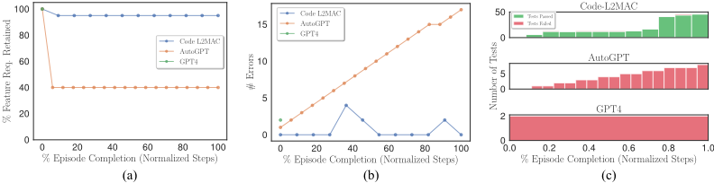
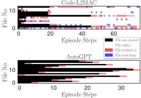
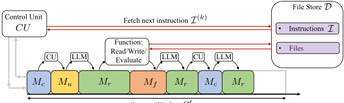
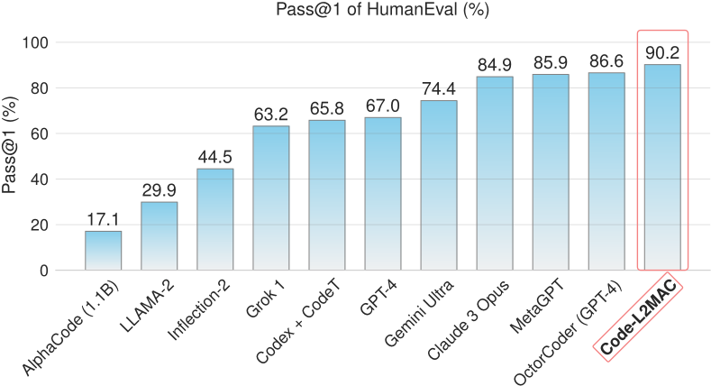

L2MAC: Large Language Model Automatic Computer for Extensive Code Generation
L2MAC：面向大规模代码生成的大语言模型自动计算机
简介
论文针对 LLM 固定上下文窗口导致无法生成长且连贯输出（如大型代码库）的问题，提出 L2MAC——首个基于 LLM 的通用存储程序计算机（von Neumann 架构）框架，本质是一个 LLM 多智能体系统。其由指令注册表、文件存储与 Control Unit（CU）构成：CU 为每条指令动态管理上下文窗口（P1），提供对整个记忆的精确读写工具（P2），并通过语法检查与自生成单元测试实现输出校验与迭代纠错（P3）。实验显示 Code-L2MAC 在系统设计大型代码库生成任务上以 Features % 等指标显著超越 AutoGPT、Reflexion 等基线，HumanEval 达 90.2% Pass@1，还能写整本书、在最高 165,000 行代码的现有代码库上实现新功能。对团队而言，这是'上下文管理+记忆读写+工具调用+输出校验'的完整 Agent harness 参考实现，其 Features % 评测方法也可直接借鉴。
问题
Transformer-based LLM 受固定上下文窗口限制，难以生成既长又内部一致的输出（如大型代码库）；现有记忆增强 LLM 方法要么只关注读记忆、把记忆演化简化为追加新记忆，要么使用无法迁移到其他领域的特化记忆，且缺乏对记忆存储的语法/语义一致性维护机制，因此不适合长输出生成任务。
方法
L2MAC 借鉴存储程序计算机（von Neumann 架构）思想，由 LLM processor、记忆（instruction registry 指令注册表 + file store 文件存储）和 Control Unit（CU）三部分组成，满足三个核心性质：(P1) 任务导向的上下文管理——CU 以多轮对话形式为每条指令动态填充上下文，接近窗口上限时将进度总结为摘要消息并重置上下文；(P2) 对整个记忆的精确读写——提供 list_files/view_files/write_files/delete_files 等工具，支持对任意已有文件的就地更新与删除，文件路径语义化命名以引导读取优先级；(P3) 输出检查——每次写操作后运行领域 evaluator（代码任务中为语法检查器 + 自生成单元测试），错误以消息形式反馈给 LLM 迭代修正，并通过 cycle prompting 判断指令是否完成。Code-L2MAC 为其在代码生成上的实例化，基于 GPT-4-0613 的 function calling，每条指令由独立 LLM agent 顺序执行。
关键结果
在系统设计大型代码库生成基准（URL Shortener、Microblogging、Chat App 等任务）上，Code-L2MAC 在所有任务上取得最高的 Features %（用户指定功能完整实现比例），同时语法错误最少、通过的自生成单元测试最多，结果为 10 个随机种子平均并附 95% 置信区间
HumanEval 基准达到 90.2% Pass@1，超过论文所列全部基线（含 GPT-4、MetaGPT、Claude 3 Opus 等）
Code-L2MAC-Large 在 Online Chat 任务上生成 1,000+ 行代码，为次高方法 AutoGPT 的 5 倍 LOC
能在最高 165,000 LOC（另两个任务 87,000+ LOC）的现有开源代码库上实现新功能，仍保持较高的 Feature %
Features % 与两位人类专家代码评审得到的 Human Expert Features % 强相关（ρ = 0.976）；与人工编写测试通过率 HT % 相关（不含测试上下文时 ρ = 0.928，含测试上下文时 ρ = 0.695）
消融实验表明移除指令间摘要消息 M_rs 对输出代码质量影响不大；展示通用长文本能力（生成整本食谱书）
创新点
区别于已有工作的三点：(1) 首个实用的 LLM 基通用存储程序计算机框架，记忆支持对任意区域的就地读写与删除，而非只读或仅追加；(2) 强调 'automatic' 而非 'autonomous'——与 AutoGPT 等把用户任务有损压缩为六句话目标、运行时持续重规划不同，L2MAC 保留完整详细指令、单一计划贯穿执行，文件存储本身即记忆状态；(3) 检查机制不仅验证即时输出，还对整个记忆施加一致性约束，失败测试可触发对既有组件的重构。
团队参考意义
相关度级别：high
命中能力域：3.1 上下文工程与记忆 | 3.3 Agent 架构与工具使用 | 3.4 多智能体协作 | 3.5 评测与可靠使用
理由：论文核心正是团队关注的'如何用好模型'而非训练模型：CU 的任务导向上下文管理（P1，摘要重置、上下文清理）是上下文窗口管理与压缩的完整工程方案；对文件存储的精确读写与就地更新是 Agent 记忆系统读写设计的代表实现；CU 编排 + function calling 工具 + 指令规划 + 输出校验构成完整的 Agent loop/harness 设计；每条指令由独立 LLM agent 顺序执行，论文明确将其定位为 LLM-based multi-agent system；同时论文提出 Features % 评测指标、自建大型代码库生成基准，并用自生成单元测试与语法检查保障可靠性，直接命中评测与可靠使用域。
建议动作：深入精读并做内部分享
中文全文
arXiv:2310.02003v6 [cs.SE] 2025年6月27日
L2MAC: LARGE LANGUAGE MODEL AUTOMATIC COMPUTER FOR EXTENSIVE CODE GENERATION
Samuel Holt 剑桥大学 sih31@cam.ac.uk Max Ruiz Luyten 剑桥大学 mr971@cam.ac.uk
ABSTRACT
基于Transformer的大语言模型（LLM）受限于底层Transformer架构的固定上下文窗口，这阻碍了其生成长且连贯输出的能力。记忆增强的LLM是一种有前景的解决方案，但现有方法无法处理长输出生成任务，因为它们（1）只关注读取记忆，并将记忆的演化简化为新记忆的拼接，或者（2）使用高度专用化的记忆，无法适应其他领域。本文提出 L2MAC 1，这是首个实用的基于LLM的通用存储程序自动计算机（冯·诺依曼架构）框架，也是一个基于LLM的多智能体系统，用于长且一致的输出生成。其记忆包含两个组件：指令注册表（instruction registry），其中填充有用于解决用户给定任务的提示程序；以及文件存储（file store），其中将包含最终输出和中间输出。每条指令依次由一个独立的 LLM Agent 执行，其上下文由一个控制单元管理，该控制单元能够精确地读取和写入记忆，以确保与整个文件存储的有效交互。这些组件使 L2MAC 能够生成大规模输出，绕过有限上下文窗口的限制，同时生成能够满足复杂用户指定任务的输出。我们通过实验证明，L2MAC 在为系统设计任务生成大型代码库方面达到了最先进的性能，在实现详细的用户指定任务方面显著优于其他编码方法；我们表明 L2MAC 适用于通用的大规模基于文本的任务，例如撰写一整本书；并且我们针对 L2MAC 相较于现有方法的性能提升提供了宝贵的见解。
1 INTRODUCTION
基于 Transformer 的大语言模型（Large Language Model, LLM），例如 GPT-3（Brown et al., 2020）、Instruct GPT（Ouyang et al., 2022）以及最新的 GPT-4（OpenAI, 2023），在生成高质量的用户导向文本方面取得了前所未有的成功。尽管这些模型能力令人瞩目，但它们本质上受限于大小为 c 的固定上下文窗口，这限制了它们能够处理的 token 数量，进而限制了所能处理的字符数量。这一限制在需要生成大规模且逻辑连贯的输出结构的任务中表现得尤为突出，例如大型代码库的生成。因此，尽管现有 LLM 擅长生成简短的独立代码片段（Chen et al., 2021），但由于有限上下文窗口所带来的信息丢失和上下文截断，它们难以生成既规模庞大又内部一致的代码库。然而，实际代码很少只是简短的片段，因此这一限制削弱了 LLM 在解决现实世界任务方面的适用性，这类任务需要动态整合多个输出并顾及远距离的信息。
一种自然的解决方案是为 LLM Agent 扩展一个外部记忆存储。然而，现有方法主要用于通过外部语料库扩展 LLM 的隐式知识（Zhong et al., 2022）、辅助长对话或文档摘要任务（Liang et al., 2023），或维护变量的精确取值（Hu et al., 2023）。在后一种情况下，这些方法只是简单地将 LLM 与字典或数据库对接，无法适应其他任务。在其他场景中，当前方法采用简单化的记忆管理策略，即追加新的
1 完整代码见 https://github.com/samholt/L2MAC 。
Mihaela van der Schaar 剑桥大学（University of Cambridge）
mv472@cam.ac.uk
L2MAC: Large Language Model Automatic Computer
![Figure 1: L2MAC Overview . Code-L2MAC is an instantiation of the LLM automatic computer (L2MAC) framework, an LLM-based multi-agent system, here for extensive code generation. First, it breaks down the user task into sequential instructions I . The Control Unit (CU) manages the LLM's context window for each instruction (agent) and interacts with the external memory file store through read, write, and evaluate tools. It identifies and reads relevant files from the memory to generate or update files per instruction (P2). This ensures proper conditioning of existing files without losing vital context (P1). Automatic checks evaluate the LLM's outputs for correctness and completion (P3), with iterative error corrections involving both code syntactical checks of the code and running self-generated unit tests to check desired functionality. Overall, this produces a complete large codebase that fulfills the detailed user task in the file store. See Figure 5 for an expanded overview.](assets/a766/figures/fig_1.png)
信息，且不提供任何就地修改的机制。这使得任何错误基本上都不可逆转，这在生成代码库时是一个关键限制，并且限制了随着任务推进对先前已生成代码进行调整的可能性。更为不利的是，这些方法并未包含用于维护存储器内部语法或语义一致性的机制，而这是生成连贯且相互依赖的代码结构的一项至关重要的要求。因此，现有方法并不适合大规模代码生成任务。
一种有效的大规模代码生成方法需要具备以下三个核心属性：(P1) 面向任务的上下文管理（Task-Oriented Context Management）：在每个计算步骤中，LLM agent 的上下文应包含完成当前指令所需的信息。上下文会被动态管理，以防止超出固定的上下文窗口 token 大小。
(P3) 检查生成的输出（Checking the Generated Output）：LLM agent 的输出会被检查是否
(P2) 针对整个存储器的精确读写工具（Precise Read/Write Tools for Entire Memory）：LLM agent 应具备能够与存储器精确交互的读/写操作，以获取和更新相关文件。
存在错误以及当前指令是否已经完成。当检测到错误时，例如语法无效的代码，或未能通过自生成的功能单元测试，便可尝试通过与 LLM agent 迭代所发现的错误来加以修复。
基于上述考虑，我们提出了 L2MAC——首个实用的基于 LLM 的通用存储程序计算机（冯·诺依曼架构）框架、一个基于 LLM 的多智能体（multi-agent）系统，并针对长代码生成任务将其实例化为 Code-L2MAC。控制单元（CU）负责编排各个 LLM agent 的执行及其与存储器的交互，从而满足上述三项规定的属性。如图 1 所示，LLM agent 首先根据一个详细的用户指定任务生成面向任务的指令列表 I。CU 会对 LLM agent 的上下文进行定制（P1），使其始终包含 I 中下一条尚未解决的指令以及过去各次迭代（agent）的执行信息，并在接近其上限时精简上下文。CU 还赋予 LLM agent 读取和更新存储器中任何现有区域、或以新输出扩展存储器的能力（P2）。此外，CU 在检查生成的输出（P3）方面发挥着关键作用。它会将语法检查器发现的错误提供给 LLM agent，并要求 LLM agent 在生成输出的同时生成检查项——这里在生成代码时即为单元测试——这些检查项会在存储器中的文件存储每次更新时得到验证，以便在需要时触发纠正措施，从而确保存储器中的大量输出在语法和功能上均保持一致。
贡献：1 ⃝ 我们提出了 L2MAC 框架，这是首个实用的基于 LLM 的通用存储程序自动计算机（冯·诺依曼架构）框架，即一个面向长输出生成任务的基于 LLM 的多智能体系统。2 ⃝ 我们为代码生成任务提供了该框架的一个实用实现，称为 Code-L2MAC。该实现使用一个控制单元（Control Unit）来控制 LLM 的输入与输出，以及控制对整个存储器文件存储进行读写的工具的使用，并强调代码检查是纠正所生成代码中存在的语法与功能错误的关键，同时以现有代码库为条件并与之集成。3 ⃝ 我们对 Code-L2MAC 进行了实证验证，展示了其最先进的能力：在生成大型代码库方面，首次解决了创建完整应用程序这类高层系统设计任务；在生成代码方面，在 HumanEval 基准测试（Chen et al., 2021）上取得了 90.2% 的 Pass@1 分数。此外，我们表明 L2MAC 适用于通用的大规模文本任务，例如撰写一整本书。另外，我们深入洞察并理解了 Code-L2MAC 如何通过自行生成单元测试来利用工具执行和验证代码，并利用这些测试来纠正生成错误，同时生成满足详细而复杂的用户指定任务功能需求的大型相互关联代码结构。
2 BACKGROUND
大语言模型（Large Language Models, LLMs）。本质上，LLM 是一个概率函数 l : Σ c →P (Σ)，它接收一个由字母表 Σ 中元素组成的、长度为 c 的列表，并输出这些元素上的一个分布，再从中抽取一个元素（Vaswani et al., 2017）。我们将 c 称为上下文长度。例如，GPT-4 和 GPT-3 分别拥有 8,192 和 4,097 的固定上下文窗口。
因此，正如 Schuurmans (2023) 中所讨论的，LLM 在推理时可以被形式化为一个有限状态机（Dolfing & Hetherington, 2001）。鉴于从有限状态机到图灵机 Turing et al. (1936) 的这一广为人知且极为出色的扩展催生了存储程序计算机这一实用框架，为 LLM 设想一种类似的扩展便是自然而然的了。
存储程序计算机（Stored-Program Computer, SPC）。最初被称为冯·诺依曼架构（Von Neumann, 1945），SPC 由处理器（算术逻辑单元）、控制单元（Control Unit, CU）以及能够同时存储指令和数据的存储器组合而成，为现代计算机设计奠定了基础。其中，控制单元管理处理器与数据之间的交互。通用 SPC 的一个基本特性是，它可以被重新编程以自动执行程序（理想情况下用于解决一个特定任务），而无需人工干预 2。具体而言，CU 从存储器中提取数据和指令，并相应地设置处理器的输入和状态（P1），然后用输出覆写一个存储器寄存器（Appendix A）。因此，SPC 在处理器的算术与逻辑能力之外，还扩展了操纵存储器的能力（P2）。CU 有一个常被忽视但至关重要的功能，即对处理器的输出进行错误检查（P3）。温度、电压变化或辐射的“随机性”效应可能导致处理器发生错误（Nicolaidis, 2010），包括错误指定的输入导致溢出。因此，CU 实现了诸如奇偶校验位检查之类的输出检查，并且通常还实现相应的纠错机制（Harris & Harris, 2010）。
3 L2MAC FRAMEWORK
现在，我们概述 L2MAC 框架——首个实用的基于 LLM 的 SPC，其在编码上的一个实例化如图 1 所示。L2MAC 由三个主要组件构成：LLM 处理器、存储文件库（memory file store），以及控制执行流程的控制单元（CU），从而赋予 LLM Agent 读写能力以及其他能力——如图 2 所示。我们有意将某些设计选择保持开放，以便将所需的关键功能与我们在面向代码生成的实现中解决这些功能的方式区分开来，我们将在下一节中详细介绍该实现。
3.1 LLM-BASED PROCESSOR
L2MAC 的一个固有组成部分是大语言模型（Large Language Model, LLM），它负责实际生成任务的输出。可以将 LLM 视为一个更为复杂的原子计算单元 f : Σ c → P (Σ)，例如其中 | Σ | = 50,257 个 token (Radford et al., 2019) 3；它并不局限于仅对二进制序列执行确定性的算术与逻辑运算，即 f : { 0 , 1 } 64 ×{ 0 , 1 } 64 →{ 0 , 1 } 64，例如标准 64 位处理器 (Hennessy & Patterson, 2011) 的情形。这使得我们拥有一个更灵活、更强大（但也更昂贵）的计算单元，可用于解决不同范围的任务。
2 顺带一提，Church-Turing 论题指出，通用图灵机（Universal Turing Machines, UTMs）与 SPC 均能够相互模拟，因此二者属于同一类计算过程的模型 Von Neumann (1945)（附录 A.1）。最近有研究表明，通过为 LLM 增配外部读写存储器，可以使其模拟一台 UTM (Schuurmans, 2023)。然而，我们的目标并非复现当前硬件 SPC 在算术与逻辑运算方面的能力，而是探索 LLM-SPC 作为自动计算机的强大能力。
3 token 词表大小是所使用的底层 LLM 的一个实现细节。
![Figure 2: Control Unit-Control flow diagram for one dialog turn t . Here this executes one current instruction I ( k ) . It starts by loading the first instruction into the context window C 0 ←{I (0) } and iterates it automatically until all instructions in I have been executed. First, C t is processed by the LLM Processor P LLM ( C t ) to output M r . The CU stores this in a buffer ∆ C t +1 ←{ M r } , and checks if M r has called a tool, and if so, it executes the tool with the specified input in M r , which includes reading, writing and evaluating E ( D ) the file store D -outputting M f , which is appended to the buffer ∆ C t +1 . The CU performs additional control flow as detailed in Section 3.3, for checking if an instruction has been completed, continuing an instruction beyond the context window (P1), and continuing executing the current instruction.](assets/a766/figures/fig_2.png)
在 L2MAC 框架中利用 LLM，既带来了可供利用的显著优势，也带来了需要克服的挑战，这些可归纳为属性 P1、P2 和 P3。在此，L2MAC 得益于 LLM 对外部工具的感知——在控制单元的辅助下，LLM 能够与这些工具进行交互。这一能力使其能够发起存储器读/写请求（P2）以及额外的输出检查（P3）。
相比之下，使用 LLM 也带来了需要解决的约束，例如上下文窗口有限所带来的阻碍，需要防止因缺乏对远处信息的关注而导致的不一致；也就是说，我们必须正确处理上下文（P1）。此外，LLM 输出（P (Σ)）的随机特性在精度和正确性至关重要的场景中是一项重大风险。因此，要有效更新相互关联的存储器，关键在于能够对其输出实施周期性检查，以确保一定程度的正确性与一致性（P3）(Liventsev et al., 2023)。
3.2 MEMORY
遵循 SPC 的设计，我们区分两类存储器：指令注册表 I 和文件存储 D。一方面，指令注册表 I 包含将用于确定处理器状态的提示程序。在 L2MAC 中，鉴于其处理器为 LLM，这主要对应于每次执行时将被纳入 LLM agent 上下文的字符串。在一种基本实现中，I 列出完成任务所需的顺序步骤，这些步骤既可以由用户指定，也可以自动生成——其中每个步骤将由一个单独的 LLM agent 执行。另一方面，文件存储 D 则存储其余供处理器读取、写入和评估的信息，而最终输出最终会存储在 D 中。
3.3 CONTROL UNIT
控制单元（CU，参见图 2）负责管理 LLM 的上下文窗口，涵盖其输入与输出，执行 LLM，检查其输出中的错误，并使其能够调用工具（函数）——包括读取和写入。我们在附录 B 中进一步详细介绍了 CU，包括一幅框图以及描述其运行的伪代码。首先，我们从 CU 如何与 LLM 交互开始。
3.3.1 TASK-ORIENTED CONTEXT MANAGEMENT (P1)
上下文形式化。CU 将 LLM 用作多轮对话系统，用消息 m 的组合来填充其上下文窗口 C，这些消息可以来自用户 M u、LLM 响应 M r、函数（工具）输出 M f 或 CU M c，从而 m ∈ { M u , M r , M f , M c } 。因此，在第 t 轮时，上下文窗口⁴ C t ∈ List ( M ) 的形式为 C t = ( m 1 , m 2 , . . . , m n t ) 。
为了使 L2MAC 成为一台自动计算机⁵，CU 提示 LLM 用指令列表 {I (1) , . . . , I ( K ) } 填充初始为空的指令注册表 I，其中每条指令都将在 LLM 处理器⁶ 中执行。随后，L2MAC 将第一条指令 C 0 ←{I (0) } 加载到 LLM Agent 的空上下文窗口中，并迭代 CU 控制流循环（图 2），直到所有指令都已完成。LLM 可以通过调用特殊函数 'step_complete' 来发出当前指令 I ( i ) 已完成的信号；此时，CU 会使用其评估器模块 E（在第 3.3.3 节中讨论）评估文件存储 D，以检查是否引入了任何错误。如果没有发现任何错误，CU 会要求 LLM 将当前上下文窗口 C t 中已生成的输出总结为一条消息 M rs，并将上下文窗口重置为 C t +1 ←{I ( k +1) , M rs } 。
4 给定一个集合 A，令 List ( A ) = { ( a i ) n i =1 , a i ∈ A ∀ i ∈ [ n ] , n ∈ N } 表示由 A 中元素组成的任意长度列表的集合。
5 我们在附录 A.2 中定义了“自动”计算机的含义。
关于 (1)，通过精心构造合适的 C t，CU 可以提示 LLM 为当前指令（很可能是用户给出的原始任务提示）规划子步骤，然后在后续迭代中针对每个子步骤逐一进行处理。举例来说，在编程场景中，(2) 可以通过存储迄今为止已生成的代码以避免在下一次迭代中重写它来实现，而 (3) 则可以通过用当前进度的总结 M rs 以及有助于完成当前指令的有用信息（例如应读取或修改哪些文件，或修复错误方面目前已取得的进展）来初始化一个新的提示来实现——(3) 在图 2 右下角有进一步的详细说明。
克服固定上下文窗口约束。LLM 的输入不能超过上下文窗口约束 c：初始上下文 C t 与附加消息缓冲区 ∆ C t +1 = { m 0 , . . . , m n } 的总长度必须能容纳在上下文窗口内，即 7 | C t ⊕ ∆ C t +1 | ≤ c 。然而，∆ C t +1 的长度事先并不可知，因此 CU 应当有办法处理 ∆ C t +1 超出上下文余量 c -| C t | 的情形。这可以通过三种不同策略的组合来实现：(1) 通过促使每个时间步的任务足够小并节约上下文 C 的填充，将这种情况的发生降到最低；而一旦出现这种情况，(2) 将当前 C t 中尽可能多的相关输出存储到文件存储 D 中，以及 (3) 更新或加入一条包含 I ( k ) 的新摘要消息，作为下一次迭代的上下文内调优（in-context tuning）。
3.3.2 PRECISE READ/WRITE TOOLS FOR ENTIRE MEMORY (P2)
显然，需要一种能在每次迭代中检索相关信息的读取机制，这一点在以往文献中已得到较为充分的探讨。相比之下，以往关于记忆（memory）的工作（如第 5 节所示）很少关注写入组件，其大多被简化为追加新的提示和 LLM 输出（Liang et al., 2023; Zhong et al., 2022; Cheng et al., 2023; Wu et al., 2022），或更新高度结构化、因而较为受限的记忆形式（Modarressi et al., 2023）的取值，例如变量或表（Hu et al., 2023）。
这些方法对于摘要、对话和数据库操作任务而言是合理的，但并不适用于长程且相互关联的输出生成任务，例如为系统设计任务生成大型代码库。事实上，在这类场景中，由于规划不完善，下游子任务 I ( j ) 可能会要求扩展先前的输出（例如代码库中的模块），再加上 LLM 的非确定性和可能出现的幻觉，这就很可能需要修改先前存储的记忆 D 以纠正这些缺陷，如第 6.2 节所示。
因此，在 L2MAC 中，实现与记忆任意部分的读/写交互至关重要。我们希望 Agent 能够按需扫描 D，检索其认为相关的记忆部分，并可能对它们进行更新。在接下来的第 4 节中，我们详细介绍了我们所实现的带有写入组件的 LLM，它不仅能够向 D 添加新信息，还能够删除和更新其中的任何内容，这是使 L2MAC 能够在长输出生成任务中取得成功的关键要素。
3.3.3 CHECKING THE GENERATED OUTPUT (P3)
如第 3.1 节和第 3.3.2 节所述，LLM 固有的随机性以及众所周知的幻觉（hallucination）现象（OpenAI, 2023）使得在长时间交互过程中很可能出现不连贯或错误的输出，这在例如编码的场景中可能是灾难性的。更为深刻的是，为满足给定指令 I ( j ) 而进行的更改（例如对某个函数的更改）可能会妨碍先前已完成指令 I ( i )（i < j）的解。因此，必须纳入两项关键检查：其一是使用给定的评估器模块 E 检查生成的输出是否存在错误，其二是检查当前指令是否已在当前上下文 C t 中完成（参见图 2 顶部的菱形）。
6 我们考虑提示程序中顺序指令的最简单情形，并在附录 I 中讨论更复杂的控制流范式。
7 我们使用 ⊕ : List ( A ) × List ( A ) → List ( A ) 表示集合 A 上两个列表的拼接。我们滥用记号，将任意 a ∈ A 视为单元素集合 { a } 。
错误检查与错误纠正。使用给定的评估器模块 E（它可以处理现有的文件存储 D，即 E ( D )），在运行时能够检测出错误，并将其作为评估器消息 M fe 返回给 LLM。该评估器是特定于领域的；例如，在编码任务中，它可以对应于语法代码检查器，或对应于验证指令 I ( i ) 输出正确性的自生成单元测试。至关重要的是，这些自生成的单元测试还有助于测试先前生成指令 I ( j ) 的既有功能。自然地，应在每次写入操作之后对文件存储 D 强制执行评估检查，以确保新增内容正确无误，并与之前的文件保持一致。这些检查会产生消息 M fe，将其提供用于上下文学习（in-context learning），使 LLM 能够纠正错误，即 ∆ C t +1 ← ∆ C t +1 ⊕ M fe，并通过重写 D 进行迭代，直到评估器检查通过（如果存在错误的话）。
检查当前指令是否完成。为了确保多轮对话 LLM 系统持续执行直至完成，我们要求 LLM 决定下一步要采取的行动，其中可能涉及执行工具（Wang et al., 2023a）。这是通过循环提示消息 M cc 实现的，该消息还会询问 LLM 指令是否已经完成。循环提示是必要的，以便应对不同指令需要可变数量轮次才能完成的情况，并防范 LLM Agent 仅讨论指令 I ( i ) 而不生成解、也不将其存入记忆的幻觉。总体而言，这确保了 LLM 在当前上下文内为给定指令提供解（P3）。
4 CODE-L2MAC
现在，我们使用我们的大语言模型自动计算机（L2MAC）框架，并将其实例化以完成大型代码库生成任务，我们将其称为 Code-L2MAC。我们将通用任务长生成框架与代码实例化区分开来，以便将核心组件与任务领域决策解耦，后者可以被适当地调整以适用于其他任务领域。我们在附录 C 中提供了实现的完整细节；但在此处，我们重点介绍关于记忆布局（特别是 D）和读取逻辑的一些值得注意的设计决策。L2MAC 中的读取组件存在多种可能有效的不同替代方案（例如，Wu et al. (2022)）。然而，为了实现透明的读取组件，我们做出了以下选择。
我们规定记忆文件存储 D 仅由文件组成，每个文件都短于在任意迭代 8 中计入前置消息后上下文窗口的剩余余量，并指示 LLM Agent 为每个文件分配一个具有语义意义的描述性路径。例如，文件名 models/user.py 表明它包含 user 类的数据模型。这一选择不仅对人类读者有价值，而且对我们的读写（Read-and-Write）实现至关重要，因为它使 LLM 能够推断现有文件 D 的内容，并对那些为完成当前指令可能需要读取的文件进行优先级排序。给定文件路径列表，LLM 可以请求将其中任意文件的内容追加到其上下文 C t 中。尽管路径与内容之间的关联并非绝对，但经验表明，当与 CU 的上下文管理逻辑相结合时，这种读取实现可以表现良好（第 6 节）。具体而言，如果 LLM 读取了某些文件的内容并达到上下文窗口限制，它可以在其后续迭代摘要中包含相应的指示，说明应读取哪些文件以及应排除哪些文件，以便生成完成当前指令所需的代码。因此，这种方法使 LLM 能够系统地扫描全部记忆，其扫描顺序由先前根据文件路径名建立的优先级引导。
5 RELATED WORK
下面，我们回顾现有的基于记忆增强 LLM 的方法，重点关注适用于完成大规模生成编码任务的方法，并在表 1 中总结它们的主要差异。我们在附录 D 中对其他相关工作进行了扩展讨论，包括其他单轮代码生成方法以及记忆增强 LLM。
单一 LLM。这类方法受限于只能生成最大不超过上下文窗口大小的输出，构成了编码领域广泛使用的最流行基线。示例包括 Codex (Chen et al., 2021)、GPT4 (OpenAI, 2023)、GPT-Engineer (Osika, 2023) 和 Code LLama (Rozière et al., 2023)。
反思型 LLM。这类方法通过让 LLM 回顾性地反思评估器的输出以及所采取的动作来提升 LLM 的性能 (Shinn et al., 2023; Madaan et al., 2023)。这些言语化的反思被用作上下文学习（in-context learning）(Dong et al., 2022)，以便在再次尝试该任务时提升性能。通过使用验证器（例如自生成的单元测试），这一简单的想法已经带来了最先进的小型代码片段生成性能 (Shinn et al., 2023)。尽管如此，这些方法的输出仍然局限于上下文窗口之内，而 Code-L2MAC 使用评估器不仅用于上下文学习，还用于保证代码库的一致性。
8 更准确地说，不超过该余量的一半，以确保 LLM 能够在其上下文内重写任何文件。
6
| Approach | Methods | Context Management (P1)? | Precise Read/Write for Entire Memory (P2)? | Checking the Generated Output (P3)? |
|---|---|---|---|---|
| Autonomous Agent LLMs with memory Single LLMs | [1,2,3] [4,5] | ✗ -forgets which files were generated ✗ -limited to c | ✓ ✗ | ✗ -No checks ✗ |
| Reflecting LLMs | [6,7] | ✗ | ✗ -limited to append-only read always memory | ✓ |
| Code-L2MAC | This work | ✓ | ✓ | ✓ |
| Approach | Methods | Context Management (P1)? | Precise Read/Write for Entire Memory (P2)? | Checking the Generated Output (P3)? |
记忆增强 LLM。关于这一主题的大多数工作聚焦于长对话/文本摘要任务 (Liang et al., 2023; Zhong et al., 2022; Cheng et al., 2023)，或数学/数据库推理 (Hu et al., 2023)。第一组中的方法通常只关注记忆的读取组件。(Wu et al., 2022) 也是如此，该方法通过用于下一词元预测的 k-NN 检索，在包括编码在内的多个任务上提升了困惑度。然而，只读式实现对 LLM 的不一致性和“随机性”很敏感，LLM 可能会破坏代码，而该方法随后无法修复。Modarressi et al. (2023) 提出了更新记忆，但他们使用的是包含两个主体及其关系的元组，因此对编码任务没有明确的应用。类似地，数学/数据库推理方法的记忆使用值字典或结构化数据库，这同样不适用于不同的场景（例如编码）。
具有记忆的自主 Agent LLM。Richards (2023)、Shrestha & Watkins (2023) 和 Nakajima (2023) 在强化学习环境中构建了完全自主的基于 LLM 的 Agent，以完成给定任务 (Wang et al., 2023a)。它们根据用户给出的少量高层目标来构建并更新自己的计划。在编码时，这些 Agent 会在运行时重新编程并重新制定其步骤计划，而不保障原始意图，从而导致频繁偏离任务 (Wang et al., 2023a; Sato et al., 2023)。相比之下，Code-L2MAC 被设计为自动的，即它在不改变或遗忘任何部分的情况下完成用户指定的详细任务。现有唯一具备可用记忆、且能够编写、读取和执行代码的自主 Agent LLM 是 AutoGPT (Richards, 2023)。它通过在每第 k 轮将先前已完成的动作迭代地总结为一条保存在上下文中的滚动摘要，来应对上下文窗口约束。与其他 Agent 一样，AutoGPT 的第一步是将用户指定的任务总结为一个名称、一个角色以及供该 Agent 完成的五个一句话目标；该摘要在整个执行过程中都保留在上下文中。与 Code-L2MAC 相比（参见图 3），AutoGPT 及相关方法存在两个关键局限：(1) 它们将用户指定的任务压缩成仅有六句话的描述；(2) 它们压缩先前的动作历史，从而丢失关键信息。在代码生成任务中，(2) 意味着遗忘存在哪些文件及其内容，而持续的重新规划又使这一问题进一步加剧。
6 EXPERIMENTS AND EVALUATION
在本节中，我们对 Code-L2MAC 进行评估，并验证其在为系统设计任务生成代码和大型代码库方面显著优于最先进的方法。由于目前缺乏针对大型代码库生成任务的现有基准测试（benchmark），我们引入了一个基准测试，以便与其他方法进行比较。此外，目前也没有用于验证系统设计任务代码库生成的自动化工具，因此我们提出了一套评估指标来比较各种方法。
基准测试任务。我们针对三个标准的系统设计代码库生成任务进行评估，这些任务的提示（prompt）问题取自真实世界中的系统设计面试题（Xu & Lam, 2020; Martin, 2023）以及 HumanEval 基准测试（Chen et al., 2021）；所有细节见附录 E。
评估指标。大规模代码库生成的独特之处在于，生成的代码可以通过多种可能的实现方式来满足高层次的、用户指定的任务功能需求。为了量化初始提示中用户指定的功能在生成代码中被有效实现的程度，我们引入了一个名为 Features % 的性能指标。该指标以数值形式表示在输出代码库中被完整且功能性实现的输入功能所占的比例。Features % 通过一次单独的 GPT-4 API 调用获得，该调用会迭代地检查整个生成的代码，以验证表 2：代码库生成系统设计任务的结果，展示了被完整实现的规定功能所占百分比（Features %）、生成代码中的语法错误数量（# Errors）、代码行数（LOC）以及通过的测试数量（Tests Passed）。Code-L2MAC 通过生成功能完备、语法错误极少且通过大量自生成单元测试的代码，在所有任务中完整实现了最高比例的用户指定任务功能需求。结果为 10 个随机种子上的平均值。
| Method | Features% | URL Shortener App.# Errors ↓ | URL Shortener App.LOC | Tests Passed ↑ | Features% ↑ | Online Social Media App.# Errors ↓ | Online Social Media App.LOC | Tests Passed ↑ | Features% ↑ | Online # Errors | Chat App LOC | Tests Passed ↑ |
|---|---|---|---|---|---|---|---|---|---|---|---|---|
| GPT4 | ↑ 53.6 ± 10.5 | 0 ± 0 | 119 ± 21.1 | 2.56 ± 0.95 | 19.5 ± 8.28 19.5 ± 5.19 | 4.09 ± 3.32 0.4 ± 0.603 0.938 ± 0.714 | 116 ± 31.5 | 0.818 ± 0.785 | 11 ± 2.26 | ↓ 0.3 ± 0.346 | 127 ± 24.1 | 1.2 ± 1 |
| CodeT | 52.9 ± 6.74 | 0.05 ± 0.105 | 110 ± 11.8 | 3.6 ± 0.513 | 106 ± 17.7 | 2.6 ± 1.76 | 10.5 ± 4.61 | 0 ± 0 | 91.6 ± 25.9 | 3.32 ± 1.57 | ||
| Self-Refine | 47.9 ± 8.53 | 0.05 ± 0.105 | 124 ± 15.7 | 3.65 ± 1.15 | 16.4 ± 2.62 | 110 ± 19.6 | 1.81 ± 0.938 | 14.2 ± 4.19 | 0.211 ± 0.304 | 111 ± 13.8 | 1.42 ± 0.927 | |
| Reflexion | 38.8 ± 6.02 | 0.1 ± 0.209 | 96.2 ± 9.11 | 2.35 ± 0.631 | 15.2 ± 8.05 | 2.53 ± 1.69 | 122 ± 24 | 1.33 ± 2.44 | 10.2 ± 3.08 | 0 ± 0 | 76 ± 6.88 | 2.85 ± 0.822 |
| AutoGPT | 25.3 ± 19.6 | 0 ± 0 | 136 ± 41.9 | 3.3 ± 1.91 | 33.3 ± 18 | 0.6 ± 0.369 | 148 ± 35.5 | 3 ± 2.86 | 23.1 ± 11.8 | 1.85 ± 2.47 | 220 ± 65.8 | 3.08 ± 3.34 |
| Code-L2MAC | 91.6 ± 8.22 | 0 ± 0 | 330 ± 47.6 | 14 ± 6.71 | 82.4 ± 14.6 | 0 ± 0 | 395 ± 52.9 | 18.3 ± 6.8 | 59.4 ± 25.9 | 0 ± 0 | 374 ± 123 | 18.8 ± 9.11 |
| Method | Features% | URL Shortener App.# Errors ↓ | URL Shortener App.LOC | Tests Passed ↑ | Features% ↑ | Online Social Media App.# Errors ↓ | Online Social Media App.LOC | Tests Passed ↑ | Features% ↑ | Online # Errors | Chat App LOC | Tests Passed ↑ |
所有输入功能的功能实现情况，并统计被完整实现的功能数量。我们将其报告为已实现功能占用户所规定总功能的百分比。附录 G 中提供了该实现的详细描述和一个启发性示例。我们还纳入了标准的代码生成评估指标（Hasemer, 2018），例如生成的代码行数 LOC，以及由代码语法分析器（Thénault, 2023）确定的代码库中的错误数量 # Errors。此外，我们指示每种方法生成单元测试，以检查生成的代码是否有效；因此，我们将这些自生成单元测试中通过的数量报告为 Tests Passed。我们在全文中为每个指标给出其 95% 置信区间。此外，我们在附录 G 中更详细地介绍了这些指标和实验设置。
基准测试方法（benchmark methods）。为评估 Code-L2MAC 是否达到最先进水平，我们将其与最具竞争力且最流行的带记忆自主 Agent LLM AutoGPT（Richards, 2023）进行比较；该方法基于 GPT4，能够读取、写入和持久化，并使用向量嵌入记忆来自主完成给定任务。我们还与代码反思类 LLM 方法进行比较，包括 CodeT（Chen et al., 2022）、Self-Refine（Madaan et al., 2023）、Reflexion（Shinn et al., 2023）以及单个 GPT4 LLM（GPT4）（OpenAI, 2023）——我们通过为这些方法提供与 Code-L2MAC 相同的工具，使它们都具备竞争力。我们在附录 F 中提供方法实现细节、超参数和实验细节。
6.1 MAIN RESULTS
我们在所有系统设计任务上对全部基准测试（benchmark）方法进行了评估，结果汇总于表 2 中。Code-L2MAC 通过生成功能完备、语法错误极少且通过大量自生成单元测试的代码，在所有任务上以最高的百分比完整实现了用户指定的任务功能需求——因此，在完成这些系统设计大型代码库生成基准测试任务方面，Code-L2MAC 是最先进的方法。我们进一步在标准 HumanEval 基准测试（Chen et al., 2021）上评估了 Code-L2MAC，并观察到它取得了 90.2% Pass@1 的最先进成绩（附录 H.1）。此外，我们表明 L2MAC 同样适用于通用的大规模文本任务，例如撰写一整本书（附录 H.2）。
6.2 INSIGHT EXPERIMENTS
本节对 Code-L2MAC 与其基准对比方法 AutoGPT 和 GPT-4 的有效性进行了深入的实证分析。具体而言，我们检验了我们所提出的一个有效的大规模代码生成框架应具备的核心特性：面向任务的上下文管理（P1）、精确的读/写工具（P2），以及输出错误检查与纠正（P3）。
Code-L2MAC 能否正确执行面向任务的上下文管理？（P1）。为了探究各基准对比方法在运行过程中，其上下文中是否包含可直接完成任务所需的信息，我们对 Features % 指标进行了调整，改为统计保留在各方法任务指令中的用户指定任务功能需求数量，即在其运行过程中最终被馈入其上下文窗口的那些指令，如图 3 (a) 所示。从实证上，我们观察到 Code-L2MAC 能够在其指令 I 中保留大量用户指定的任务功能需求，并执行面向指令的长时间运行任务。我们注意到，AutoGPT 在最初也会将用户指定的任务功能需求转换为任务指令；然而，它这样做时压缩程度更高——将信息浓缩为仅仅六句话的描述。这一过程导致那些为正确完成整体任务、并使其与详细的用户指定任务相一致所必需的关键任务信息丢失。
Code-L2MAC 能否对整个文件存储执行精确的读/写操作（P2）？我们希望了解，在执行任务指令的运行过程中，Code-L2MAC 能否理解代码库中已有的已生成代码文件——这些文件可能是在许多条指令之前创建的，并凭借这种理解创建与现有文件相互关联的新文件，以及最重要的是，在实现新功能时更新现有代码文件。为了获得洞见，我们在图 4 中绘制了一次 episode 期间每个写操作步骤的读取、写入以及文件创建时机的热力图。我们观察到，Code-L2MAC 对已生成的现有代码具有理解能力，这使其能够更新现有代码文件，即使是那些在许多指令步骤之前最初创建的文件；并且当它不确定时可以查看这些文件，并通过写入文件来更新文件。相比之下，AutoGPT 通常只在最初创建文件时写入一次，并且只能更新它所知晓的、保留在其当前上下文窗口中的文件。尽管它也拥有读取文件工具，但由于其上下文窗口处理方式是对上下文窗口中最旧的对话消息进行摘要，即对完成任务运行过程中先前所做进展的持续有损压缩，它经常会忘记自己在许多次迭代之前创建的文件。

Code-L2MAC 能否检查生成的输出并进行纠错（P3）？当使用概率模型（大语言模型，LLM）作为生成器来输出代码时，其输出中自然会出错。因此，我们希望验证当错误确实出现时，各基准测试方法能否对代码库进行纠错。我们在图 3 (b) 中绘制了在一次会产生错误的运行期间代码库中语法错误的数量。我们观察到，Code-L2MAC 能够正确地对先前生成的、其中包含错误的代码库进行纠错；这些错误可能源自最后写入文件中的语法错误，或源自依赖于最近写入文件的其他文件——这些文件现在也包含了错误。其实现方式是：当错误确实出现时，它会获得错误输出，并在仍完成当前指令的同时修改代码库以解决该错误。相比之下，AutoGPT 无法检测到代码库中何时出现了错误，而是继续运行，这可能会使代码库中形成的错误数量不断累积。

此外，Code-L2MAC 在生成功能代码的同时还会生成单元测试，并将这些测试用作错误检查器，以便在代码库生成过程中检查其功能；它还可以利用这些错误来修复代码库，使其通过那些在更新现有文件的一部分后开始失败的单元测试。我们在图 3 (c) 中展示了这一点，并观察到 AutoGPT 尽管也被提示为其生成的所有代码编写单元测试，却无法将这些测试用作完整性错误检查；这一情况可能还会因以下观察而进一步加剧：AutoGPT 会忘记自己先前创建了哪些文件，因而在进行新修改时无法修改这些已被遗忘的现有代码文件，从而导致代码文件之间互不兼容。
7 CONCLUSION AND FUTURE WORK
本文提出了 L2MAC，这是首个基于大语言模型（LLM）的通用存储程序计算机框架，它通过记忆存储以有效且可扩展的方式增强 LLM，从而能够完成此前未能成功实现的长输出生成任务。具体而言，Code-L2MAC 作为面向长代码生成任务的应用，超越了现有解决方案，是用于快速开发的极为有用的工具。本工作并非没有局限性。L2MAC 的性能在从规划到工具调用的各类任务中，本质上受限于其底层 LLM。此外，当前设计通过在上下文窗口中列出所有文件名，对代码库的规模施加了隐式约束，这一点可以很容易地加以改进。这些方面，以及诸如复杂指令流、指令重编程和可解释提示程序等许多其他方面，为未来工作提供了令人兴奋的开放方向，详见附录 I。
伦理声明。本文提出了首个实用的基于 LLM 的存储程序计算机框架，并实例化了一个用于生成大型代码库的版本，命名为 Code-L2MAC。然而，滥用此类工具，或在任务指定不正确的情况下使用该工具，可能导致不良输出。此外，由于使用了 LLM，此类工具容易产生幻觉，因此应始终对此类结果的最终输出设置内容过滤器。
可复现性声明。所有代码均可在 https://github.com/samholt/L2M AC 获取。为实现完全可复现性，我们提供了内容详尽的附录，其中包含所有实现与实验细节，以便重新创建基准测试（benchmark）任务和基线方法。具体细节如下：基准测试任务环境细节见附录 E；基准测试方法实现细节见附录 F；关于 Code-L2MAC 的实现细节，高层细节见附录 C，底层细节见附录 F.1；评估指标细节见附录 G。
致谢。作者谨此感谢各自的资助方，其中 SH 和 ML 由 AstraZeneca 资助。此外，我们衷心感谢所有匿名审稿人，以及 van der Schaar 实验室（ www.vander schaar-lab.com ）的研究组成员和 Andrew Rashbass，感谢他们在论文撰写过程中提出的宝贵意见、评论和建议。
Table of Contents
| 0 | 1 | 2 | 3 |
|---|---|---|---|
| A | Stored-Program Computers (SPC) | Stored-Program Computers (SPC) | 17 |
| A.1 | SPC is a Universal Turing Machine . . . . . . . . . . . . . . . . . . . . . . | . . 17 | |
| A.2 | What is an Automatic Computer? . . . . . . . . . . . . . . . . . . . . . . . | . . 17 | |
| B | Control Unit Operation | Control Unit Operation | 18 |
| C | Code-L2MAC High Level Implementation Details | Code-L2MAC High Level Implementation Details | 19 |
| C.1 | Read / Write Implementation Details . . . . . . . . . . . . . . . . . . . . . | . . 21 | |
| D | Extended Related Work | Extended Related Work | 22 |
| D.1 | Vanilla LLMs . . . . . . . . . . . . . . . . . . . . . . . . . . . . . . . . . | . . 22 | |
| D.2 | Transformers for Long Inputs . . . . . . . . . . . . . . . . . . . . . . . . . | . . 22 | |
| D.3 | Memory Augmented LLMs . . . . . . . . . . . . . . . . . . . . . . . . . . | . . 23 | |
| D.4 | Tool Augmented LLMs . . . . . . . . . . . . . . . . . . . . . . . . . . . . | . . 24 | |
| D.5 | Multi-step Reasoning &Reflecting LLMs . . . . . . . . . . . . . . . . . . . | . . 24 | |
| D.6 | Turing Machines, Stored Program Computers and Machine Learning . . . . | . . 25 | |
| E | Benchmark Task Environment Details | Benchmark Task Environment Details | 25 |
| E.1 | Codebase Generation System Design Task . . . . . . . . . . . . . . . . . . | . . 25 | |
| E.2 | HumanEval Benchmark . . . . . . . . . . . . . . . . . . . . . . . . . . . . | . . 29 | |
| F | Benchmark Method Implementation Details | Benchmark Method Implementation Details | 30 |
| F.1 | Code-L2MAC Low Level Implementation Details . . . . . . . . . . . . . . | . . 31 | |
| G | Evaluation Metrics | Evaluation Metrics | 34 |
| G.1 | Motivation for Feature% . . . . . . . . . . . . . . . . . . . . . . . . . . . | . . 40 | |
| H | Additional Results | Additional Results | 40 |
| H.1 | HumanEval Benchmark Results . . . . . . . . . . . . . . . . . . . . . . . . | . . 40 | |
| H.2 | L2MAC for Writing an Entire Book . . . . . . . . . . . . . . . . . . . . . . | . . 41 | |
| H.3 | Additional Main Results . . . . . . . . . . . . . . . . . . . . . . . . . . . . | . . 47 | |
| H.4 | Code L2MAC in Action. . . . . . . . . . . . . . . . . . . . . . . . . . . . | . . 52 | |
| H.5 | Additional Diverse Programming Code Generation Tasks . . . . . . . . . . . | . . 55 | |
| H.6 | Human Expert Validation of Features Implemented Percentage Metric . . . . | . . 56 | |
| H.7 | Challenges and the Evaluation of Human-written Test-cases . . . . . . . . . | . . 56 | |
| H.8 | Generating 1,000+ Lines of Code with Code-L2MAC . . . . . . . . . . . . | . . 57 | |
| H.9 | Code-L2MAC Ablation with No Instruction Summarization Message . . . . | . . 57 | |
| H.10 | Additional Tasks on Implementing a New Feature in an Existing Large Code Base with Code-L2MAC of up to 165,000 LOCs . . . . . . . . . . . . . . . . . . | . . 58 | |
| I | Future work | Future work | |
| 59 | |||
| I.1 L2MAC in Non-coding Domains | . . . . . . . . . . . . . . . . . . . . . . . | . . 61 |
| 0 | 1 | 2 | 3 |
代码。所有代码均可在 https://github.com/samholt/L2MAC 获取。我们在 https://github.com/vanderschaarlab/L2M AC 还有一个更广泛的研究组代码库。
16
A STORED-PROGRAM COMPUTERS (SPC)
存储程序计算机（Stored-Program Computer, SPC）。最初称为冯·诺依曼架构，由 Von Neumann (1945) 首次提出，是处理器（算术逻辑单元）、控制单元（Control Unit, CU）以及能够同时存储指令和数据的存储器的组合，SPC 奠定了现代计算机设计的基础。由控制单元（CU）管理这两个组件之间的交互，这种设计能够在无需人工干预的情况下被重新编程以解决各种任务 9。更详细地说，CU 使用来自存储器的指令将处理器设置为特定状态（例如，将两个数加载到处理器的（算术逻辑单元）输入寄存器中，然后执行加法并将结果存储到存储器中）。计算机不仅能够执行算术和逻辑运算，还能够对存储器进行操作。在这一范式中，一个经常被忽视但对处理器可靠运行至关重要的独特方面是对处理器输出的错误检查。在典型处理器中，错误可能源于诸如温度、电压变化或辐射（例如宇宙射线）等硬件影响 (Nicolaidis, 2010)，也可能源于规定不当的输入所导致的溢出（例如除以零错误）。因此，典型的处理器会进行输出检查，其中最简单的是奇偶校验位检查，并可将这些检查与纠错机制相结合 (Harris & Harris, 2010)。
A.1 SPC IS A UNIVERSAL TURING MACHINE
存储程序计算机（SPC）与自动机理论。我们可以将 SPC 视为图灵机 T 的一种特定类型。形式上，图灵机由七元组 T = ( Q, Σ , Γ , δ, q 0 , b, F ) 定义，其中：
在存储程序计算机的语境下，存储器既保存指令（类似于转移函数 δ），也保存数据（类似于来自 Σ 的输入序列）。决定下一条待执行指令的程序计数器可以用机器在 Q 中的当前状态来表示。于是，程序在 SPC 上的执行就类似于图灵机根据所读取的输入和定义好的转移函数 δ 从一个状态转移到另一个状态时所执行的计算。
SPC 的通用性与通用图灵机类似，意味着只要在其存储器中给定适当的转移函数（或程序指令集合），它就能够模拟任何其他图灵机并执行任何可计算的任务（Turing et al., 1936）。
A.2 WHAT IS AN AUTOMATIC COMPUTER?
本文所使用的“自动计算机”（automatic computer）一词，源自 Turing et al. (1936) 所提出的原始概念，其中 Turing 引入了自动机（automatic machine）的概念——即如今通常所说的图灵机。在此语境下，“自动”（automatic）指的是一种能够在无需人工干预的情况下执行预定义指令集合的系统（Turing et al., 1936; Von Neumann, 1945）。
9 附带一提，Church-Turing 论题指出，通用图灵机（UTM）与 SPC 均能够相互模拟，因此二者是同一类计算过程的模型 Von Neumann (1945)（附录 A.1）。最近已有研究表明，通过为大语言模型（LLM）配备外部读写存储器，可以使其模拟一台 UTM（Schuurmans, 2023）。然而，我们的目标并不是复现当前 CPU-SPC 在算术和逻辑运算方面的能力，而是探索 LLM-SPC 作为自动计算机的强大能力。
17
在 LLM 的语境下，存在一些能够让 LLM 自主执行任务的方法，Wang et al. (2023a) 对此进行了综述。然而，区分“自主”（autonomous）与“自动”（automatic）这两个概念至关重要。自主 Agent 的特征在于能够独立地制定并调整计划，这意味着其在执行指令时具有一定程度的自主决定性与主动性。相比之下，L2MAC 的关注点在于开发一个能够细致且自动地执行提示程序 I 中所包含的预定义指令的系统。该执行过程在所有指令成功执行完毕之前无需任何人工干预。就此而言，L2MAC 更符合传统意义上的自动计算机概念。它作为一个通用的、遵循指令的基于 LLM 的计算机（Von Neumann, 1945），专门用于高效地执行所提供的指令，从而确保切实完成最初指定的提示程序。这里的“通用”（general-purpose）一词意味着，L2MAC 能够接受任意提示程序作为输入并执行它，而无需为每个新引入的提示程序重新设计系统。
B CONTROL UNIT OPERATION
控制单元（Control Unit）管理着 LLM 的整个上下文，其本身是一个有限状态机。在此，我们对第 3.3 节加以扩展，在算法 1 中给出伪代码，在图 5 中给出 L2MAC 的扩展框图，并在图 6 中给出数据流图。请编写一个具备以下功能的在线聊天平台：· 注册与密码找回。· 头像与状态。· 隐私设置。· 屏蔽联系人与群组管理。· 实时消息与回执。· 端到端加密与图片分享。· 表情符号与贴纸。· 群聊创建。· 管理员角色。· 临时图片状态与可见性控制。· 网页版。· 离线消息与在线状态。请执行该编码任务。1. 搭建应用程序的结构，包括一个模拟数据库，并实现用户注册与个人资料管理。. [函数调用 'write_files'] 代码（在 "app.py" 中创建一个 Flask 应用，在 "database.py" 中搭建一个模拟数据库，并在 "test_database.py" 中建立相应的测试。）[函数调用] ['view_files'] "app.py", "database.py", "test_database.py" [函数响应] 代码（"app.py", "database.py", "test_database.py" 的内容）该步骤任务是否已完成？. . [函数调用 'write_files'] 代码（覆写包含模拟数据库的文件 "database.py" 请执行该编码任务。2. 实现带注册与密码找回端点的用户注册功能；通过单元测试确保两者均能正常工作。以现有文件为条件编写新代码：['app.py', 'database.py', 'test_database.py']。按需查看文件。此前，应用程序带模拟数据库的基本结构已搭建完毕并成功通过测试。
· 注册与密码找回。
· 头像与状态。
· 隐私设置。
· 屏蔽联系人与群组管理。
实现带注册功能的用户注册，以及一个带有用于管理用户、消息、群组和状态的方法的类。
![REFERENCES Hans JGA Dolfing and I Lee Hetherington. Incremental language models for speech recognition using finite-state transducers. In IEEE Workshop on Automatic Speech Recognition and Understanding, 2001. ASRU'01. , pp. 194-197. IEEE, 2001. 1 2001. ASRU'01. , pp. 194-197. IEEE, 2001. finite-state transducers. In IEEE Workshop on Automatic Speech Recognition and Understanding, 2001. ASRU'01. , pp. 194-197. IEEE, 2001. Figure 5: Code-L2MAC Extended Overview . Code-L2MAC is an instantiation of the LLM automatic computer (L2MAC) framework, here for extensive code generation. First, it breaks down the user task into sequential instructions I . The Control Unit (CU) manages the LLM's context window C t for each instruction and interacts with the external memory file store D through read, write, and evaluate tools. It identifies and reads relevant files from the memory to generate or update files per instruction (P2). This ensures proper conditioning of existing files without losing vital context (P1). Automatic checks evaluate the LLM's outputs for correctness and completion (P3), with iterative error corrections involving both code syntactical checks of the code and running selfgenerated unit tests to check desired functionality. Overall, this produces a complete large codebase that fulfills the detailed user task in the file store D .](assets/a766/figures/fig_5.png)
18

C CODE-L2MAC HIGH LEVEL IMPLEMENTATION DETAILS
下面我们描述 Code-L2MAC 的高层实现细节，并在附录 F.1 中提供冗长的底层实现细节，例如函数的 JSON 定义。我们遵循与 L2MAC 概述相同的结构，并聚焦于我们针对每一项所做的具体设计选择。对于 LLM Processor，我们使用 GPT-4-0613 OpenAI (2023)，该版本对 GPT-4 进行了训练，使其能够接收函数（工具）的上下文内（in-context）描述并按需调用，其中描述遵循 JSON 格式（OpenAI, 2023）。
我们提供的函数如下：
接下来，我们讨论为开发一种基于我们的 LLM Automatic Computer (L2MAC) 框架、专门面向大型代码生成任务设计的方法所做的具体选择，我们将该方法称为 CodeL2MAC。
对于 LLM Processor，我们使用 GPT-4-0613 OpenAI (2023)，该版本对 GPT-4 进行了训练，使其能够接收函数的上下文内描述并按照 JSON 格式按需调用（OpenAI, 2023）。我们在附录 F.1 中给出了提供给 LLM 的函数的底层 JSON 定义，其中大部分函数在下文中也会提及。
在指令（instructions）方面，我们将其10初始化为 I 0 = ∅ ，并且 CU 仅在第一次迭代中以用户指定的功能需求（任务描述）查询 LLM，并请求 LLM 定义一个顺序提示程序（sequential prompt program）I = [ I (0) , . . . , I ( K ) ] 。
关于数据 D，我们确定它仅涵盖迄今为止已生成的代码，以便在 Code-L2MAC 终止时，D 对应于其输出。然而，我们对代码库 D 施加了
10 严格来说，I 是用一组预定义的消息初始化的，以使 LLM 作为 Code-LLM 的一部分能够有效工作（包括 CU 提供给 LLM 的函数）。
19
算法 1 L2MAC 的控制单元伪代码
1: 输入：初始用户输入提示 p in；文件存储 D；领域评估器单元 E；领域系统消息 M s；领域引导消息 M cb；上下文窗口约束 c；回退令牌余量 b
2: 输出：外部存储 D。
3: I ← ∅ , M rs ←∅
4: M u ← p in
5: M r ← LLM ( { M s , M cb , p in } ) ▷ 通过引导指令对 I 进行自编程
6: ( I , D ) ← process_into_prompt_program ( M r , D )
7: while I is not empty do
8: C t ←{ M s , M rs } ▷ 清空上下文窗口：其中始终包含系统消息和摘要消息
9: ( I ( k ) , D ) ← pop_front_of_ I ( I , D ) ▷ 取指：从外部存储 D 中取出下一条指令
10: C t ← C t ⊕I ( k )
11: has_instruction_completed ← False
12: while has_instruction_completed is False do
13: M r ←P LLM ( C t )
14: ∆ C t +1 ←{ M r }
15: if 'function_call
11 更准确地说，不超过执行过程中任意一次迭代在提供初始消息之后上下文内剩余余量的一半。这是为了确保大语言模型（LLM）能够在上下文内读取并重写任何给定的文件。
与工具交互。在执行过程中，LLM 可能会请求读取和写入操作。每次写入之后（这可能引入新的测试），都会运行一个语法检查器以及 D 中所有已有的测试，并将输出通过 M fe 提供给 LLM。如果在收到该反馈后，LLM 认为任务已经完成，它可以通过调用一个特殊函数 'step_complete' 向 CU 发出信号，该函数会将当前上下文的输出总结存入 M rs，并基于该摘要 M rs 继续执行下一条指令。在全部 K 条指令完成后，该过程停止（halts），并返回 D。
由于前文所述针对 D 中文件的限制，LLM 可以按需读取和写入任何单个完整文件，并且在为保留上下文而有需要时，将这些信息总结后供下一次迭代使用。然而，关于读取哪些文件的决策，可以启发式地依据文件路径和文件名所提供的语义信息来作出，这些信息编码了该文件在 D 中的角色。
至此，只剩下读取和写入的过程需要详细说明。给定指令 I ( k )，LLM 必须能够知道它可以调用 D 中的哪些模块、如何调用它们，以及应当在目录中的什么位置写入新代码。然而，D 的规模可能超出上下文窗口。
具体而言，我们通过实现以下两个函数来启用 Code-L2MAC 的读取组件 R。list_files()，它按广度优先搜索顺序列出文件路径。这一功能本可以进一步改进为仅列出某个子目录内的文件子集，但为简单起见，在我们的实现中，我们自动列出 D 中的所有文件路径并作为上下文提供给 LLM，使其能够了解现有代码，并帮助它确定应将新生成的文件纳入何处。以及 view_files(files)，它接受一个文件路径列表，并返回包含相应文件内容的字符串，同时将这些内容附加到上下文窗口中。
我们还始终向 LLM 提供一条系统消息 M s，告知它需要完成一项编码任务、必须在无人类输入的情况下行动，以及关于其中现有编码环境的一些细节——例如，它可以使用 Python 测试框架 Pytest，并且只能对内存数据库进行模拟（mock），因为本地环境中没有安装任何数据库。尽管这一问题可以通过为大多数常见数据库提供商安装并提供干净、全新的版本来解决，我们仍将这一扩展留作未来工作加以探索。
我们还为 LLM 提供了一条预提示（pre-prompt）消息，它会将该消息与用户指定的需求结合使用以构建初始计划。我们在附录 F.1 中对这条消息以及系统消息作了详细说明。
C.1 READ / WRITE IMPLEMENTATION DETAILS
在此，我们进一步展开介绍 Code-L2MAC 的读/写实现细节。这部分内容建立在第 4 节以及附录 C 和 F.1 中已有描述的基础之上。
大语言模型（LLM）通过调用函数与控制单元（CU）进行交互，因此，读和写的实现可以通过讨论为实现这一目的而提供给 Code-L2MAC 的函数来完整描述，这些函数即 'read_files' 和 'write_files'。
值得注意的是，控制单元始终向 LLM 展示已经属于代码库一部分的文件路径列表（例如，'file paths: ['app.py', 'tests/test_app.py']'）。目录和文件的名称（即文件路径）为 LLM 读取各文件的顺序提供了语义先验，该顺序取决于它所寻找的功能（此外还涉及其他要素，其中始终包括当前指令 I_t，并可能包括之前对话轮次的输出和错误响应）。
请注意，如果 LLM 最初读取的文件并不包含它所寻找的内容，或者所需的功能分散在多个文件中，LLM 可以继续读取其他文件。回顾一下，当上下文窗口已满时，CU 会提示 LLM 针对当前指令 I_t 对上下文窗口中的相关部分进行总结。在这种情况下，如果功能分散在多个文件中，它可以总结出需要读取哪些相关文件。
假设 LLM 已经确定了它想要读取的文件名 'file_path'。下面我们深入考察提供给 LLM、用于向 CU 表达意图的函数（工具）。
21
正如实证结果所展示的，这些函数作为 Code-L2MAC 的组件表现良好。未来工作附录（附录 I）讨论了可以如何对这些函数进行优化。
我们发现 Code-L2MAC 的读写功能与先前的记忆增强 LLM 有所不同（更多细节请参见扩展的相关工作，即附录 D），因为后者可以归类为：
D.1 VANILLA LLMS
仅使用单个 LLM 而不采用记忆增强方法，其能力仅限于生成最长不超过底层 LLM 上下文窗口约束 c 的输出。尽管这类方法并不直接适用，但它们仍然相关，因为迄今为止文献中所有编码任务的主要焦点都是使用 LLM 在上下文窗口约束 c 内解决代码生成任务。著名的例子包括 Codex (Chen et al., 2021)、GPT4 (OpenAI, 2023)、GPT-Engineer (Osika, 2023) 和 Code LLama (Rozière et al., 2023)。
具有更长上下文窗口的原始 LLM。一种可能的做法是直接扩展上下文窗口。然而，这种方法的计算复杂度呈二次方增长 (Vaswani et al., 2017)；更有甚者，已有观察表明，具有长上下文窗口的 LLM 难以有效关注来自窗口中部的信息，随着长度增加，其任务性能会显著下降 (Liu et al., 2023a)，这使得该方法愈发不切实际。另一种朴素的方法是在当前环境中对 LLM 进行微调，使其将环境隐式地记忆在自身权重中；但随着状态的演化，这一过程需要反复进行，其计算开销也过高而无法实用 (Brown et al., 2020)。
D.2 TRANSFORMERS FOR LONG INPUTS
也有一些架构层面的方法可以直接让 LLM 处理更大的窗口。Tay et al. (2022) 对这一“效率导向”的 transformer 主题进行了全面的综述。
Child et al. (2019)；Beltagy et al. (2020)；Zaheer et al. (2021) 提出了随序列长度呈亚二次方扩展的稀疏注意力机制；Guo et al. (2022)；Phang et al. (2022) 借助局部/全局注意力机制扩展到更长的输入；Wang et al. (2020) 用低秩矩阵近似注意力机制以实现线性复杂度；Choromanski et al. (2022) 提供了一种一致收敛的注意力无偏估计器；Peng et al. (2021) 使用随机特征来近似 soft-max 注意力，从而降低计算负担。尽管上述列举并不详尽，但这些优化对 LLM 性能的确切影响尚未被完全理解，这些方法在实际中的采用也并不广泛。
在 Press et al. (2022) 中，作者讨论了用与距离成正比的惩罚项对注意力分数进行偏置，以取代位置嵌入的使用，这使他们能够在推理时有效地外推到更长的序列。因此，他们实现了显著更高效的训练。然而，这并未解决推理时长上下文窗口所带来的挑战。
22
D.3.1 LLMS WITH BUILT-IN MEMORY
这类工作在训练时让 LLM 接触记忆。Yogatama et al. (2021) 从两个方面扩展了常规的注意力架构。首先，他们通过省略对远处 token 的反向传播步骤，在训练时不增加太多负担的情况下扩展了上下文窗口。其次，他们通过融入潜在空间中最近邻的历史数据里关于下一个 token 的信息，来更新下一个 token 的概率分布。Borgeaud et al. (2022) 本质上为每个训练样本引入了来自外部语料库的 k-NN（基于训练期间固定的嵌入）。Zhong et al. (2022) 提出基于当前嵌入与该 token 先前出现时的嵌入之间的相似性，对下一个 token 概率分布进行提升。这些方法使 LLM 能够在训练中结合这一记忆组件，但本质上可以视为与嵌入最近邻查找记忆属于同一思路。然而，这些方法都无法使记忆得到更新。
最后，(Bulatov et al., 2022) 将用于下一次推理的记忆嵌入到 token 序列中。然而，这种方法的记忆可解释性低、非符号化且容量有限，因此未能完全解决任意长度的任务。
D.3.2 INFERENCE-TIME MEMORY-AUGMENTED LLMS
有限上下文窗口所施加的限制显而易见，这促使人们开展了多项克服该限制的工作，并不可避免地引出了记忆的概念。然而，此类工作大多聚焦于长对话/文本摘要任务（Liang et al., 2023; Modarressi et al., 2023; Zhong et al., 2022; Cheng et al., 2023），或数学/数据库推理（Hu et al., 2023）。第一类方法由于领域所限，仅关注记忆的读取部分。(Wu et al., 2022) 也是如此，该方法探索了利用 k-NN 查找来检索记忆以进行下一个 token 预测，并观察到包括编程在内的多个任务的困惑度有所提升。然而，此类只读实现对大语言模型（LLM）因其反复无常的易错性和“随机”本质而破坏代码的情况更为敏感，且无法以任何其他方式与记忆进行交互。这方面的一个例外是 Modarressi et al., 2023，但其记忆（因而其更新能力）由形如 (Subject 1, Subject 2, Relationship) 的元组构成，对于编程任务而言并无明显的适用之处。类似地，诸如 (Hu et al., 2023) 之类的数学/数据库推理方法将记忆简化为值的字典或结构化数据库，这同样不适用于其他场景（例如编程）。
D.3.3 AUTNOMOUS AGENT LLMS WITH MEMORY
这些工作将大语言模型（LLM）构建为强化学习环境中的一个智能体（agent），它观察一个状态然后采取一个动作，通常是带着某个参数调用特定工具并与环境交互，直到任务被解决 (Wang et al., 2023a)。这些工作的独特之处在于它们完全自主地行动，它们通常被给予若干高层目标，并构建自己的计划，这些计划会被持续更新，从而在无需外部输入的情况下实现自引导运行，以完成其目标或持续运行 (Richards, 2023; Shrestha & Watkins, 2023; Nakajima, 2023)。对于代码生成任务，这意味着这些智能体可以在运行时重新编程并重新制定其步骤计划；然而，这常常导致智能体偏离主题而非完成指定的给定任务，并陷入无限循环 (Wang et al., 2023a; Sato et al., 2023)。然而，在 L2MAC 中，我们明确其为自动（automatic）而非完全自主（autonomous），以便在无需人工干预的情况下执行指定的用户输入命令，同时完成用户输入所指定的给定任务。此外，在现有的具有记忆的自主智能体 LLM 中，唯一能够对文件进行代码写入、读取和执行的直接适用方法是 AutoGPT (Richards, 2023)。它通过在每给定轮数后对已完成的先前动作进行迭代式有损总结、并仅在上下文窗口中保留滚动总结的方式，克服了上下文窗口的限制来完成长时间运行的任务。AutoGPT 及其他类似方法普遍存在的做法是：它们的第一步是获取用户指定的任务，并将其有损地总结为一个名称、一个角色以及五个供智能体完成的单句目标；这条目标消息也始终位于智能体的上下文窗口中。在每个对话步骤中，LLM 都会被提供一个 ReACT (Yao et al., 2022) 消息模板作为提示，以通过选择下一个要调用的工具来进行推理、规划和行动，直到目标达成，然后停止。总体而言，诸如 AutoGPT 之类的这些方法有两个关键局限：(1) 它们将最初详细的用户指定任务有损地压缩为一个六句话的描述（一句角色描述和五句目标句），(2) 它们对先前的动作历史进行有损压缩，这对于代码生成任务而言等同于忘记创建了哪些文件及其用途，而这一问题又因在对话步骤中使用一个单独的新计划进行重新规划而进一步加剧。而我们提出的 LLM 自动计算机（L2MAC）则可以：(1) 最初创建一个详细的计划，并在整个过程中使用该单一计划来对齐并完成原始的用户指定任务；(2) L2MAC 知晓已生成的现有文件，这些文件封装了直至当前状态的所有先前动作（其中文件跟踪当前的记忆状态），使其能够了解新代码并将其与已生成的现有文件相集成。
23
D.4 TOOL AUGMENTED LLMS
Schick et al. (2023) 教会大语言模型（LLM）通过 API 调用来使用外部工具，例如使用计算器、搜索引擎或翻译系统，以弥补 LLM 的弱点或降低计算成本。LLM 选择何时从记忆中读取（而不是自动接收从记忆中获取的信息）的方法，基本上可以被视为向 LLM 提供了一种新工具（例如 Hu et al. (2023)；Modarressi et al. (2023)）。对于 L2MAC 的读写实现而言，情况正是如此，但控制单元并非所有功能都能在这一视角下看待，例如对上下文窗口的监控或对文件存储的自动评估便是如此，除非我们过度牵强地加以延伸。无论如何，正如 Modarressi et al. (2023) 所论证的，与 Schick et al. (2023) 的这种相似性并不会削弱开发新的、具有影响力的工具的重要性。
D.5 MULTI-STEP REASONING & REFLECTING LLMS
反思型 LLM（Reflecting LLMs）。这类方法通过引入评估器，并利用 LLM 对已采取的动作（当前轨迹部分）进行反思，从而得出可操作的言语反馈，并将其持久化保存在只追加存储器（append-only memory）中，以此提升现有单个大语言模型（LLM）的任务性能（Shinn et al., 2023; Madaan et al., 2023）。这些言语反思学习是上下文学习（in-context learning）（Dong et al., 2022）的一种形式，当任务或子任务重新开始时，它们会被用于提升任务或子任务的性能。这一简单而实用的反思思想，在能够获得某种可能的外部验证器（例如为代码生成而自生成的单元测试）时，已被证明能够将单个 LLM 在小型代码片段生成任务上的性能提升至最先进水平（Shinn et al., 2023）。我们的检查机制的一个独特特征在于，它们不仅旨在验证即时输出，更在于对存储器整体施加一致性。这意味着，在以往的场景中，测试失败只会要求修改 LLM 的输出，而在 L2MAC 中，它还可能促使重新审视并重构文件存储中已有的组件。
具体而言，我们发现 Code-L2MAC 与反思型 LLM 方法（例如 Self-Refine 和 Reflexion）之间存在以下差异：
多步推理（Multi-step reasoning）。借助 LLM 之间分层信息流的方法，得益于信息的分布化，也能够处理超出上下文长度的信息。例如，(Zhang et al., 2022; Wu et al., 2021) 以迭代且分层的方式对长文档执行摘要。关于在统一形式化框架下对此类方法进行统一，可参见 (Dohan et al., 2022)。Code-L2MAC 使用了这一方法族的简单实例化，用于根据初始提示填充 I，或在清理上下文窗口时对执行过程进行摘要，但未来的迭代版本可以构建在更复杂的级联结构之上，以改进我们对 L2MAC 的实现。多步推理只是 L2MAC 的一小部分，我们设想 L2MAC 能够通过 CU 和存储器来增强多步推理方法（参见附录 I）。此外，还存在标准的强化学习（RL）多步规划框架 (Holt et al., 2024; 2023)，可在未来工作中将其适配到 LLM 上。
24
D.5.1 LLM-BASED MULTI-AGENT SYSTEMS
基于 LLM 的多智能体系统（LLM-based Multi-Agent Systems）由多个由 LLM 驱动的智能体（Agent）组成，这些 Agent 相互交互以完成预期任务 (Wang et al., 2024; Guo et al., 2024)。L2MAC 就是一个基于 LLM 的多智能体系统的实例，它由多个独立的基于 LLM 的 Agent 组成，这些 Agent 按顺序工作，每个 Agent 获得单独的下一条指令（这些指令由一个初始的 LLM Agent 生成），并在各 Agent 之间持久保存前一个 Agent 输出的记忆，如图 1 所示。广义而言，基于 LLM 的多智能体系统通过多个 Agent 的集体智能以及专门的角色设定与技能，促进复杂的交互与决策 (Wang et al., 2024; Guo et al., 2024)，从而使它们能够协作完成任务。此类工作包括 (Wang et al., 2023b; Du et al., 2023; Zhuge et al., 2023; Hao et al., 2023; Akata et al., 2023; Liu et al., 2023b; Park et al., 2023; Cai et al., 2023; Hong et al., 2024; Wu et al., 2023; Li et al., 2024; Packer et al., 2023)。
D.6 TURING MACHINES, STORED PROGRAM COMPUTERS AND MACHINE LEARNING
已有工作分别利用大语言模型（LLM）实现了通用图灵机（UTM）与存储程序计算机（SPC）的实例化（Schuurmans, 2023; Giannou et al., 2023），这些工作在理论上颇具启发性。然而，在这两种情况下，其以 transformer 为核心的方法都仅旨在模拟 UTM 或 SPC，因而并未实现一种在功能上优于 UTM 或 SPC 的方法（且二者均非新事物），而这样的方法本可以用低得多的成本实现。相比之下，我们利用 SPC 框架来增强 LLM 作为随机性自然语言处理（NLP）系统的独特能力，从而从单个用户提示出发自动求解可能很长的任务，这与前述工作的关注点截然不同。
尽管（Graves et al., 2014）并未使用 LLM，且其关注点也与我们的完全不同（因为其目标是通过监督学习复现算法），但值得一提的是，他们通过为递归神经网络（Recursive Neural Network）扩展存储器，构建了图灵机或冯·诺依曼架构，使其在被训练用于复现算法时能够推断简单算法。
E.1 CODEBASE GENERATION SYSTEM DESIGN TASK
鉴于缺乏适合用于评估长代码生成任务的现有基准测试（benchmark）任务环境，我们引入了一个专为标准系统设计任务量身定制的新 benchmark，此类任务通常分配给人类完成。传统的系统设计任务往往需要高层次的概念构思，例如设计一个在线应用为满足特定用户功能需求所需的架构、模块、组件、接口和数据结构（Xu & Lam, 2020）。与这些主要关注高层次的系统概要的传统任务不同，我们的 benchmark 强制要求实现功能完备的代码。该代码旨在实例化一个以实用的方式满足用户指定需求的最小系统。
为了进行有意义且贴近现实的评估，我们的 benchmark 涵盖了三个标准的系统设计代码库生成任务。这些任务的提示问题源自实际的系统设计面试题，为评估提供了贴近现实的基础（Xu & Lam, 2020; Martin, 2023）。该 benchmark 中包含的任务如下：
25
用户编辑、删除或查看与其 URL 相关的分析数据。应设有一个用于监控用户活动、用户账户和整体系统性能的管理仪表板。此外，用户应能够为其缩短的 URL 设置过期参数。
26
每种方法均接收相同的用户指定功能需求（下文将针对每个环境任务分别给出），并生成一个代码库输出；随后，我们使用我们的评估方法对其进行评估，该评估方法在附录 G 中有完整详述。以下是每个任务的用户指定输入提示：
URL Shortener App , user-specified feature requirements input prompt:
### ** 在线 URL 缩短服务 **
** 概述 **：一项允许用户提交长 URL 并随后获得该 URL 缩短版本以便于分享的服务。
** 待实现的功能需求 **：
1. ** URL 缩短 **：
- [ ] 1.1. 用户可以输入需要缩短的 URL。
- [ ] 1.2. 系统验证该 URL 有效且合法。
- [ ] 1.3. 系统生成唯一的缩短 URL。
- [ ] 1.4. 用户可以选择自定义短链接（视可用情况而定）。
2. ** 重定向 **：
- [ ] 2.1. 访问缩短的 URL 将重定向至原始 URL。
3. ** 分析统计 **：
- [ ] 3.1. 用户可以查看其缩短 URL 的相关统计信息。
- [ ] 3.2. 查看点击次数。
- [ ] 3.3. 查看每次点击的日期/时间。
- [ ] 3.4. 查看点击者的地理位置。
4. ** 用户账户 **：
- [ ] 4.1. 用户可以创建账户。
- [ ] 4.2. 账户持有者可以查看其所有缩短的 URL。
- [ ] 4.3. 账户持有者可以编辑或删除其缩短的 URL。
- [ ] 4.4. 账户持有者可以查看其所有缩短 URL 的分析数据。
5. ** 管理仪表板 **：
- [ ] 5.1. 管理员可以查看所有缩短的 URL。
- [ ] 5.2. 管理员可以删除任何 URL 或用户账户。
- [ ] 5.3. 管理员可以监控系统性能和分析数据。
6. ** 过期 **：
- [ ] 6.1. 用户可以为缩短的 URL 设置过期日期/时间。
Online Microblogging App , user-specified feature requirements input prompt:
** 在线微博服务（OMS）- 描述与需求 ** * 描述：* 一个基于 Web 的平台，注册用户可以在其中发布简短的文本消息、查看他人的消息、关注/取消关注其他用户，并与帖子互动。该平台为个人用户和管理端管理提供功能。
** 需实现的功能需求 **：
1. ** 用户管理：**
1. ** 注册与认证：**
- [ ] 允许用户使用电子邮件、用户名和密码进行注册。
- [ ] 提供重置忘记密码的选项。
- [ ] 使用 JWT 或类似协议进行安全认证。
2. ** 个人资料管理：**
- [ ] 用户可以编辑其个人资料信息：头像、个人简介、网站链接和所在地。
- [ ] 可选择将个人资料设为私密或公开。
2. ** 发布与内容管理：**
1. ** 创建帖子（推文）：**
- [ ] 允许用户创建不超过 280 个字符的文本帖子。
- [ ] 可选择在帖子中包含图片。
- [ ] 用户可以删除自己的帖子。
2. ** 与帖子互动：**
- [ ] 用户可以点赞、转推和回复帖子。
- [ ] 帖子回复采用嵌套评论结构。
3. ** 内容过滤与搜索：**
- [ ] 用户可以使用关键词搜索特定帖子或用户。
- [ ] 基于话题标签、用户提及或热门话题的过滤选项。
27
3. ** 社交互动：**
1. ** 关注与粉丝：**
- [ ] 用户可以关注/取消关注其他用户。
- [ ] 时间线视图显示已关注用户的帖子。
- [ ] 用户会收到新粉丝的通知。
2. ** 私信：**
- [ ] 用户之间的私密对话线程。
- [ ] 可选择屏蔽/取消屏蔽用户发来的消息。
3. ** 通知：**
- [ ] 用户会收到点赞、转推、回复和提及的通知。
4. ** 热门与发现：**
1. ** 热门话题：**
- [ ] 系统根据提及的数量和速度识别并显示热门的话题标签或话题。
- [ ] 热门话题可按地区或全局进行排序。
2. ** 用户推荐：**
- [ ] 基于兴趣、活跃度和共同粉丝推荐值得关注的用户。
在线聊天应用（Online Chat App），用户指定的功能需求输入提示词：** 全球聊天服务（GCS）** ** 概述 **：一个实时在线聊天应用，允许用户发送文本消息、图片，并创建群聊。** 待实现的功能需求 **：
用户注册与身份验证：
- [ ] 1.1. 使用电子邮件注册。
- [ ] 1.2. 忘记密码恢复。
用户资料：
- [ ] 2.1. 允许用户设置头像和状态消息。
- [ ] 2.2. 用于控制谁可以查看用户详细信息或最后上线状态的隐私设置。
联系人管理：
- [ ] 3.1. 屏蔽 / 取消屏蔽联系人。
- [ ] 3.2. 创建、编辑和管理群组。
消息传递：
- [ ] 4.1. 发送和接收实时文本消息。
- [ ] 4.2. 消息已读回执（蓝色对勾或同等形式）。
- [ ] 4.3. 用于安全保障的端到端加密。
- [ ] 4.4. 图片分享。
- [ ] 4.5. 支持表情符号、GIF 和贴纸。
群聊：
- [ ] 5.1. 创建带有名称和图片的群聊。
- [ ] 5.2. 添加或移除参与者。
- [ ] 5.3. 管理员角色和权限。
状态 / 动态功能：
- [ ] 6.1. 允许用户发布在有限时间内可见的图片状态。
- [ ] 6.2. 控制谁可以查看该状态。
Web 应用程序：
- [ ] 7.1. 可从浏览器访问的基于 Web 的版本。
连接与离线模式：
- [ ] 8.1. 用户离线时的消息排队；连接恢复后消息即被发送。
- [ ] 8.2. 显示在线 / 离线状态。
食谱应用（Recipe App），用户指定的功能需求输入提示词：### ** 食谱分享平台 ** 一种服务
** 概述 **：允许用户提交、分享和发现食谱。它包含食谱分类、用户评分与评论以及个人食谱管理等功能。
** 待实现的功能需求 **：
1. ** 食谱提交与管理 **：
- [ ] 1.1. 用户可以提交包含食材、制作步骤和图片的食谱。
- [ ] 1.2. 食谱提交包含分类选项（例如菜系类型、饮食限制）。
- [ ] 1.3. 用户可以编辑或删除自己提交的食谱。
- [ ] 1.4. 进行食谱格式验证，以确保信息完整。
2. ** 搜索与分类 **：
- [ ] 2.1. 用户可以基于食材、食谱名称或类别搜索食谱。
- [ ] 2.2. 按类型（例如早餐、午餐、晚餐）、菜系或饮食需求（例如纯素、无麸质）对食谱进行分类。
3. ** 用户账户与个人资料 **：
- [ ] 3.1. 用户可以创建和管理账户。
- [ ] 3.2. 账户持有者可以收藏喜爱的食谱。
- [ ] 3.3. 个人资料页面显示已提交的食谱和收藏的食谱。
4. ** 评分与评论 **：
- [ ] 4.1. 用户可以按5星制为食谱评分。
- [ ] 4.2. 用户可以为食谱撰写评论。
- [ ] 4.3. 在食谱页面上显示平均评分。
5. ** 社区功能 **：
- [ ] 5.1. 用户可以关注其他用户或厨师。
- [ ] 5.2. 信息流显示所关注用户的近期活动（新食谱、评分）。
- [ ] 5.3. 提供在社交媒体平台上分享食谱的选项。
6. ** 管理仪表板 **：
- [ ] 6.1. 管理员可以管理所有提交的食谱。
- [ ] 6.2. 管理员可以移除不当内容。
- [ ] 6.3. 监控网站使用统计数据和用户参与度。
7. ** 食谱推荐 **：
28
- [ ] 7.1. 系统基于用户偏好和过往活动生成食谱推荐。
- [ ] 7.2. 用户会收到其感兴趣领域内新食谱的通知。
Event Planner App , user-specified feature requirements input prompt:
### ** 定制活动策划工具 **
** 概述 **：一款基于 Web 的应用程序，旨在帮助用户组织和管理活动策划的各个方面。该工具应提供以下功能：选择活动类型、管理宾客名单、寻找场地以及与服务提供商协调。
** 需实现的功能需求 **：
1. ** 活动创建与管理 **：
- [ ] 1.1. 用户可以创建新活动，指定活动类型、日期和时间等详细信息。
- [ ] 1.2. 系统允许对活动进行自定义（例如主题、配色方案）。
- [ ] 1.3. 用户可以根据需要更新或修改活动详情。
- [ ] 1.4. 提供日历视图，供用户管理多个活动。
2. ** 场地搜寻 **：
- [ ] 2.1. 用户可以根据地点、容量和类型搜索场地。
- [ ] 2.2. 集成地图以显示场地位置。
- [ ] 2.3. 用户可以直接通过应用程序预订场地。
3. ** 宾客名单管理 **：
- [ ] 3.1. 用户可以创建和管理宾客名单。
- [ ] 3.2. 宾客名单导入/导出功能。
- [ ] 3.3. 出席回复（RSVP）跟踪与管理。
4. ** 供应商协调 **：
- [ ] 4.1. 用于与各类活动服务提供商（餐饮承办商、装饰商）建立联系的平台。
- [ ] 4.2. 用户可以查看和比较供应商的资料与评价。
- [ ] 4.3. 用于与供应商沟通的应用内消息系统。
5. ** 预算管理 **：
- [ ] 5.1. 用户可以为活动设定预算。
- [ ] 5.2. 按类别（场地、餐饮等）进行预算跟踪与细分。
- [ ] 5.3. 预算超支警报。
6. ** 用户账户与个人资料 **：
- [ ] 6.1. 用户可以创建个人资料。
-
E.2 HUMANEVAL BENCHMARK
我们使用由 Chen et al. (2021) 提出的标准 HumanEval 基准测试（benchmark）。该 benchmark 评估底层基于大语言模型（LLM）的方法从给定的 docstring 生成独立 Python 函数这一任务，并通过留出的单元测试来评估所生成代码函数的正确性。该 benchmark 由 164 个带有单元测试的手写编程问题组成，这些问题旨在评估语言理解、算法和简单数学，其作者（Chen et al., 2021）将这些问题比作简单的软件面试题。
29
F BENCHMARK METHOD IMPLEMENTATION DETAILS
下文中，我们详细给出所有基准测试（benchmark）方法的全部实现细节，包括附录 F.1 中 Code-L2MAC 的完整底层实现细节。
AutoGPT。我们选择与最具竞争力且最流行的带记忆的自主 Agent 大语言模型（LLM）方法，即 AutoGPT（Richards, 2023）进行比较。该方法使用 GPT4 作为底层 LLM。与其他自主 Agent 一样，AutoGPT 的第一步是将用户指定的任务总结为一个名称、一个角色以及五个供 Agent 完成的单句目标；该总结在整个执行过程中一直保留在上下文中。在每一步中，直到目标达成之前，底层 LLM 都会接收一个 ReACT（Yao et al., 2022）消息模板，通过选择下一个要调用的工具来进行推理、规划并采取行动。具体而言，我们使用了 AutoGPT 的最新稳定版本 0.4.7，启用了本地工具执行，并禁用了在网络上搜索答案，以确保公平比较。值得注意的是，AutoGPT 同样具备工具功能，并拥有用于读取、写入和列出本地文件存储中文件的工具——这使其成为最具竞争力且最适用的对比基线。尽管还存在其他自主 Agent LLM 方法，但它们并不具备以与 AutoGPT 相同的方式对外部文件存储进行读写的能力。重要的是，AutoGPT 在运行时有时会出现某些运行无法完成任务的情况，即未能输出任何代码，或陷入无限循环。当此类失败发生时，我们将这些运行归类为失败，并将其从结果中排除。该方法默认使用温度为 0 的 LLM。
GPT4。我们还选择与单个 GPT4 LLM（GPT4）（OpenAI, 2023）进行比较，我们对其进行了改造以使其具有竞争力：为其提供与 Code-L2MAC 所使用的相同工具，从而构成一个仅使用 LLM 处理器而不带控制单元的消融实验。具体而言，我们为其提供了与 Code-L2MAC 完全相同的消息和实验设置，包括相同的系统消息和提示格式消息；但是，它被限制为只能以一条能够填满整个上下文窗口 C t 的长单条响应进行回应。
CodeT。我们在上述 GPT4 方法实现的基础上实现了 CodeT，这是一种近期的最先进代码片段生成方法（Chen et al., 2022）。CodeT 对独立生成的代码输出进行采样，并使用同一个 LLM 为这些代码样本生成测试用例，然后使用所生成的测试用例执行这些代码样本，并进行双重执行一致性（dual execution agreement）检验，以返回在所生成测试上表现最佳的输出代码样本。为了使该方法在应用于大型代码库生成任务时更具竞争力——考虑到可以生成满足用户给定功能需求的代码库，但可能存在许多种不同的实现方式（包括组件与类的划分以及跨文件和文件夹的组织）——因此，我们不再独立于所生成的代码库对测试进行采样，而是遵循我们在 GPT4 和 Code-L2MAC 中的设置，同时生成代码库和单元测试，使二者与给定的实现相匹配。我们将这一生成过程独立重复 n = 3 次，针对所生成的测试运行代码库，按通过的测试数量对代码库进行排序，并返回通过自生成测试数量最多的代码库。
Self-Refine。类似地，我们同样在上述 GPT4 方法实现的基础上实现了 Self-Refine，这是另一种近期的最先进代码片段生成方法（Madaan et al., 2023）。Self-Refine 使用迭代式自我精炼（iterative self-refinement），在利用底层 LLM 提供反馈与精炼给定的 LLM 生成输出之间交替进行，以产生更高质量的输出。具体而言，给定一个初始的 LLM 生成代码库输出，我们使用同一个 LLM 提供文字反馈，说明它本可以如何针对给定的原始任务改进该代码库，然后在同一上下文窗口内利用该文字反馈，对先前生成的代码库进行精炼。该过程重复 n = 3 次，与 Madaan et al. (2023) 中所使用的 n = 3 保持一致。我们遵循与 Madaan et al. (2023) 中相同的编码任务设置，以使该方法具有竞争力。此外，为了使其更具竞争力，在生成代码库之后，我们使用与 Code-L2MAC 中相同的错误检查方法，并将所发现的任何代码错误的结果以及任何未通过的已生成测试的结果纳入上下文中，使其也能利用这一信号来改进所生成的代码库。
Reflexion。同样，我们也在上述 GPT4 方法实现的基础上实现了 Reflexion，这是另一种近期的最先进代码片段生成方法（Madaan et al., 2023）。Reflexion 是另一种基于反思的 LLM 方法，它在环境回合（任务）完成后，使用同一个 LLM 对轨迹（LLM 的输出）进行反思，以提供关于如何能更好地完成该任务的语言反馈。这些语言反馈信号随后被持久化存储在一个情景式只追加（列表）记忆缓冲区中，并在下一次从头开始完成任务（重新启动环境）的回合中作为上下文提供。Reflexion 将来自环境的二值或标量反馈转换为其语言反馈，然后作为 LLM 在下一个回合中的额外上下文使用。为了使 Reflexion 更具竞争力，在生成代码库之后，我们采用与 Code-L2MAC 中相同的错误检查方法，并将所发现的任何代码错误的结果以及所生成的任何未通过测试的结果附加到上下文中。具体而言，Reflexion 遵循一个迭代过程：它基于与 Code-L2MAC 及现有方法相同的初始提示生成一个代码库，然后被要求评估代码库中完全且功能性实现的特性数量（如输入提示中所列），给出一个标量分数（作为环境的奖励信号），该分数被附加到上下文窗口中。随后是自我反思步骤，其中它被要求分析轨迹（代码库、评估得到的标量反馈），以生成一份关于如何改进的总结（该回合的语言经验反馈）。该总结随后被存储在一个外部缓冲区中。然后我们重置上下文窗口，从初始任务提示加上来自外部缓冲区的语言经验教训开始，并重复这一迭代过程 n = 3 次以具备竞争力。我们遵循 Reflexion 的代码编程设置和提示，并将其适配到我们的任务中以更具竞争力。
Code-L2MAC。我们提出的方法使用附录 F.1 中定义的消息与函数定义。在此基础上，该方法遵循算法 1 中概述的控制单元（CU）伪代码，生成由指令 I 构成的提示程序（prompt program），并迭代控制单元控制流循环的每一轮对话，直至所有指令全部完成。此外还有若干次要的实现细节，我们也在此一并详述。我们规定了指令可被重试的最大次数 r Max：当在执行某条指令期间试图超出上下文窗口时，便启用一个新的上下文窗口，强制上下文窗口在附带当前进展摘要的情况下重启该指令——我们根据经验将 r Max 设为 30。当当前重试次数超过 r Max 时，我们将该次运行判定为失败，并将其结果排除。重要的是，在发生此类失败时，理想情况下该方法既可以等待人工输入以进行纠正，也可以在出错状态下继续运行。我们使用的大语言模型（LLM）为 GPT4-0613，并在整个使用过程中将温度设为 0.01。此外，另一个实现细节是：当 CU 通过比较上下文窗口中最近的两条消息，检测到自己陷入反复重复同样两条消息的循环时，它会将 LLM 的温度提高 0.1 并继续运行，直到温度达到 1.0 的上限，然后在退出该循环之后再将温度降回 0.01。这是为了通过引入随机性来逃离局部极小值，从而形成一种模拟退火的形式。在接下来的附录 F.1 中，我们将精确地详述这些特殊的消息模板。
F.1 CODE-L2MAC LOW LEVEL IMPLEMENTATION DETAILS
我们遵循与附录 C 中所述相同的设置，并在下文中提供精确的底层实现细节。我们使用 GPT-4-0613，该模型对函数调用（function calls）具有微调支持，并使用如下的函数定义文件。
Function definitions:
{ "name": "provide_detailed_sub_task_steps_for_sub_agents", "description": "用于生成逐步（step-by-step）计划，其中每个步骤段落是一个详细的子任务步骤，由一个单独的子智能体（sub-agent，即大语言模型智能体）来完成。在每个详细的步骤段落中，当在该步骤中实现或编写代码时，始终在最后包含一句话，要求创建并运行测试。", "parameters": { "type": "object", "properties": { "steps": { "type": "array", "description": "字符串列表，其中每个字符串是一个单独的步骤子任务段落，由一个单独的子智能体来完成。在每个详细的步骤段落中，当在该步骤中实现或编写代码时，始终在最后包含一句话，要求创建并运行测试。", "items": { "type": "string", } } , } , "required": ["steps"], } , } , { "name": "sub_task_step_complete",
31
"description": "当用户指定的子任务步骤已完成时调用此函数。", "parameters": {"type": "object", "properties": {},},}, {"name": "view_files", "description": "将文件内容打印输出到响应中以供查看。", "parameters": {"type": "object", "properties": {"files": {"type": "array", "description": "要查看的文件列表", "items": {"type": "string" # 假设每个文件以字符串形式表示}},}, "required": ["files"],},}, {"name": "run_python_file", "description": "运行 python 文件并将输出返回到响应中以供查看。即通过 'python3 file_name_to_run' 来运行。", "parameters": {"type": "object", "properties": {"file_name_to_run": {"type": "string", "description": "要运行的文件名",}, "arguments": {"type": "array", "description": "可选的运行参数", "items": {"type": "string"}}},}, "required": ["file_name_to_run"],},}, {"name": "pytest_files", "description": "对输入的文件名运行 pytest 并将结果打印输出到响应中以供查看。如果未提供文件名，pytest 将对所有文件运行。", "parameters": {"type": "object", "properties": {"files_to_test": {"type": "array", "description": "要运行 pytest 的文件名", "items": {"type": "string"}}},},},}, {"name": "write_files", "description": "写出多个文件，它们将被合并到现有代码库中。始终输出整个文件。你始终使用制表符缩进代码。", "parameters": {"type": "object", "properties": {"files_and_contents": {"type": "array", "description": '文件及其内容的列表。', "items": {"type": "object", "properties": {"file_path": {"type": "string", "description": "文件路径"}, "file_contents": {"type": "string", "description": "文件内容"}}, "required": ["file_path", "file_contents"]}}}}, "required": ["files_and_contents"],},}, {"name": "delete_files", "description": "删除文件。指定文件名，这些文件将被删除。如果你指定文件名 '-1'，文件夹中的所有文件都将被删除。", "parameters": {"type": "object", "properties": {"files": {"type": "array", "description": "要删除的文件列表。如果你提供文件名 '-1'，文件夹中的所有文件都将被删除。", "items": {"type": "string"}},},
32
" r e q u i r e d " : [ " f i l e s " ] , } , }
在 Code-L2MAC 中，我们使用如下系统消息（system message）（OpenAI, 2023）M s，并将其包含在所有上下文窗口 C t 中，这是标准做法（OpenAI, 2023）。
System message M s :
目标：为一个大型系统设计任务编写代码。请注意，代码应当是功能完备的。不得使用占位符。只能使用提供给你的函数。只能使用 'write_files' 来输出代码。你必须自主行动，在任何阶段都不会收到人类的输入。你必须将完成该任务的完整代码作为输出返回，并将其正确地合并到现有代码库中。你总是要写出整个文件的完整内容。你总是使用制表符缩进代码。请在写入文件之前务必先查看这些文件，以确保你写入的是正确的文件。在编写测试时，应使文件名以 'test_' 前缀开头。在现有已生成代码的条件下，提供实现该任务所必需的最少代码——包括修改现有已生成的代码。你无法可视化任何图形输出。你存在于一个 Actor Model 机器中，当你列出各个步骤时，每一步都将由一个新的、独立的 sub-ChatGPT 模型来执行。当你列出某个子任务的步骤时，你可以选择性地指定子任务验证，以检查其是否已成功完成。你不能使用任何数据库，因为本地环境中没有设置任何数据库；作为替代，请用一个内存字典来模拟数据库以存储数据。保存到磁盘的数据不会在步骤之间或写操作之间持久保留。如果某个测试失败，错误可能出在代码上，也可能是测试本身不正确，因此当测试不正确时，可以随意覆盖并修改测试，以使所有测试通过。使用所提供的函数。在调用函数时，只需严格按照此格式提供符合 RFC8259 标准的 JSON 请求，不得有任何偏离。
当 Code-L2MAC 最初对自身指令进行自编程时，我们为其提供以下提示模板来完成这一操作，该模板将用户消息 M_u 封装为 'user_specified_feature_requirements'。
M cb bootstrap instruction:
你将获得关于待编写代码的指令。首先列出将需要的核心类、函数、方法的名称，并对它们的用途作简要说明。不要对每个文件的功能逐一说明。请注意，代码应当是完全可用的。不得使用占位符。你将从 "entrypoint" 文件开始，然后转到该文件所导入的文件，依此类推。请注意，代码应当是完全可用的。不得使用占位符。遵循与所用语言和框架相适应的最佳实践文件命名规范。确保文件包含所有 import、类型等内容。代码应当是完全可用的。确保不同文件中的代码彼此兼容。编写代码时，如果不确定，就写一个合理的实现。包含模块依赖或包管理器依赖定义文件。有用信息：对于 Python，你总是要创建一个合适的 requirements.txt 文件。总是为函数定义添加一条简要描述其用途的注释。为非常复杂的逻辑部分添加解释性注释。在文件夹/文件结构以及项目打包方式方面，始终遵循所请求语言的最佳实践。你可以使用任何包以及任何你希望安装的其他包。你不能使用任何数据库，因为本地环境中没有设置任何数据库，应改用内存中的字典来模拟数据库以存储数据。保存到磁盘的数据不会在步骤之间或写操作之间持久保存。编写测试时，让文件名以 'test_' 前缀开头。Python 工具偏好：- pytest - dataclasses - flask 目标：'''{user_specified_feature_requirements}''' 通过创建一个极其详细的分步计划来理解问题，其中每一步都很长（包含多个句子），并且总体上涵盖上面指定的每一项功能需求，可以直接从中复制。计划中使用的步骤不超过 10 步。在适用的情况下，在每一步创建额外的测试、检查和评估，以帮助做出优秀的代码实现，其中所有代码都是完全可用的。使用最佳软件设计实践，你可以一次输出大量代码。请在最后加上一句话，要求在实现或编写代码的同一过程中创建并运行测试。你在任何阶段都不会收到人类输入，因此你不能依靠人类来进行测试。一开始只需创建一个详细的计划，其中包括设计和运行测试以检查它们是否全部通过。请务必在下面的计划中包含所有指定的功能需求。
M cc Control cycle message of starting the instruction:
目标：执行子任务步骤：{ instruction }。\n\n注意：使任何新代码文件以现有代码文件为条件：{ list_files() }。在代码中完整实现这些功能，不留占位符。如果为了完成当前任务步骤需要查看现有文件，你现在可以选择性地查看它们。你的上下文窗口有限，因此请有选择地查看文件，只查看你认为可能需要查看的文件。\n\n上一步的输出摘要：""{ previous_instruction_output_summary }""\n\n现在请仅以函数调用的形式作出响应，且只能调用所提供的以下函数之一：{ function_names() }，如果你想要输出代码，则只能使用 'write_files' 函数来输出代码。
33
此处 instruction 是当前操作的指令，'list_files()' 是一个列出文件的工具函数，previous_instruction_output_summary 是摘要消息 M rs，而 'function_names()' 列出了 LLM 可以请求的当前函数名称。
M cc 继续执行指令的控制循环消息：
以下子任务步骤是否已完成：''' { instruction } '''\n\n如果是，请调用函数 'sub_task_step_complete'；否则，请反思并修正完整代码以完成任务。只使用已提供给你的函数，并且如果你想要输出代码，只能使用 'write_files' 函数来输出代码。使其以现有代码为条件：{ list_files() } 在代码中完整实现这些功能，不留占位符。如果你在写入文件之前尚未查看过这些文件，请先查看它们，以确保你写入的是正确的文件。\n现在请仅以函数调用的形式作出响应，且只能调用所提供的以下函数之一：{ function_names() }，如果你想要输出代码，则只能使用 'write_files' 函数来输出代码。
此处 instruction 是当前操作的指令，'sub_task_step_complete' 是 LLM 用来表明其已完成当前指令而调用的函数，'list_files()' 是一个列出文件的工具函数，而 'function_names()' 列出了 LLM 可以请求的当前函数名称。
M cs 重新启动同一指令的控制摘要消息：请提供一到两句话的摘要，概括本步骤的输出，该摘要将对下一步骤有用。你的响应将在启动下一步骤时被使用，且不会包含之前的任何消息。
M cs 控制总结消息，用于对指令输出进行总结——在继续执行下一条指令时使用。
你已耗尽你的上下文窗口。请反思你的进展。请提供一段简短精炼的回复，最多不超过两句话，该回复将用于在不包含先前消息的情况下从头重新启动此步骤。
G EVALUATION METRICS
目前尚无自动化工具可用于验证系统设计任务的输出，因此我们提出评估指标来比较不同方法的输出。大规模代码生成的独特之处在于：生成的代码可以通过多种可能的实现方式来满足输入中所指定的高层用户功能需求。
为了量化初始提示（prompt）中用户指定的功能在生成代码中得到有效实现的程度，我们引入了一个名为 Features % 的性能指标。该指标以数值形式表示在输出代码库中得到完整且功能性实现的输入功能所占的比例。Features % 通过单独进行一次 GPT-4 API 调用获得，该调用会迭代地检查整个生成的代码，以验证所有输入功能的功能实现情况，并统计完整实现的功能数量。我们将其表示为已实现功能数占用户指定功能总数的百分比。具体而言，我们实现该指标的方法是：首先从某一方法生成的输出中收集所有生成的代码文件，并将所有代码文件以“文件名后跟文件内容”的格式输出为命名字符串，然后将其传入下方的提示模板中，由 GPT-4 API 统计完整实现的功能数量。随后，我们使用正则表达式解析器从 LLM 响应消息中提取最终数字。我们在附录 H.6 中进行了一项人类研究，发现该评估指标与人类专业软件工程师通过人工代码审查统计相同已实现功能数量所得的结果具有相关性。
下面我们给出该提示模板，并随后提供一个其实际应用的示例。
Features % prompt template
目标：根据所给出的编号功能，你需要评估以下代码，并返回一个数值（即计数），表示这些编号功能中有多少个已在所提供的代码中实现。请在最后一行以 "FEATURES_FUNCTIONAL=num_features_functional" 的形式给出数值答案。指定的编号功能：'''{user_specified_feature_requirements}''' 待评估功能完整实现数量的代码："""{code_files}"""
其中，'user_specified_feature_requirements' 是用户指定的任务描述，其完整内容在附录 E 中给出；'code_files' 则是整个代码库的全部内容，以文件名加文件内容的形式打印输出。
34
下面给出一个实际应用的示例，例如针对环境任务 URL Shortener App 某一次运行所得到的 Code-L2MAC，其中给出了完整的用户指定功能需求，并包括 GPT-4 调用的响应。
GPT4 API call.
要根据“在线 URL 缩短服务”（Online URL Shortening Service）的需求评估所提供的代码，可以使用以下编号清单。对于代码中存在的每一项功能，可以递增一个数值：
'''
**在线 URL 缩短服务评估清单**：
1. **URL 缩短**：
- [ ] 1.1. 用户可以输入需要缩短的 URL。
- [ ] 1.2. 系统验证该 URL 是有效且合法的。
- [ ] 1.3. 系统生成唯一的缩短 URL。
- [ ] 1.4. 用户可以选择自定义短链接（视可用情况而定）。
2. **重定向**：
- [ ] 2.1. 访问缩短后的 URL 会重定向到原始 URL。
3. **统计分析**：
- [ ] 3.1. 用户可以查看其缩短 URL 的统计信息。
- [ ] 3.2. 查看点击次数。
- [ ] 3.3. 查看每次点击的日期/时间。
- [ ] 3.4. 查看点击者的地理位置。
4. **用户账户**：
- [ ] 4.1. 用户可以创建账户。
- [ ] 4.2. 账户持有者可以查看其所有缩短的 URL。
- [ ] 4.3. 账户持有者可以编辑或删除其缩短的 URL。
- [ ] 4.4. 账户持有者可以查看其所有缩短 URL 的统计分析。
5. **管理员仪表板**：
- [ ] 5.1. 管理员可以查看所有缩短的 URL。
- [ ] 5.2. 管理员可以删除任何 URL 或用户账户。
- [ ] 5.3. 管理员可以监控系统性能和统计分析。
6. **过期**：
- [ ] 6.1. 用户可以为缩短的 URL 设置过期日期/时间。
**已实现功能总数**：[统计已勾选的方框数量以得到数值]
'''
你可以逐一检查所提供的代码，勾选出每一项已经实现的功能。最后，统计已勾选的方框数量，即可得到已实现功能数量的数值。
'''
用于评估完全实现功能数量的代码：
"""
test_analytics.py
'''
python
import analytics
import datetime
def test_track_click():
"""
Test that click events are tracked correctly.
"""
analytics.track_click('abc123', '8.8.8.8')
data = analytics.get_analytics('abc123')
assert len(data) == 1
assert isinstance(data[0]['time'], datetime.datetime)
assert data[0]['ip_address'] == '8.8.8.8'
def test_get_analytics():
"""
Test that analytics data is retrieved correctly.
"""
data = analytics.get_analytics('abc123')
assert len(data) == 1
assert isinstance(data[0]['time'], datetime.datetime)
assert data[0]['ip_address'] == '8.8.8.8'
'''
analytics.py
'''
python
import datetime
# Mock database
analytics_data = {}
def track_click(short_url, ip_address):
"""
Track a click event.
"""
if short_url not in analytics_data:
analytics_data[short_url] = []
# Record the click event
click_event = {
'time': datetime.datetime.now(),
'ip_address': ip_address
}
analytics_data[short_url].append(click_event)
def get_analytics(short_url):
"""
Retrieve analytics data for a short URL.
"""
return analytics_data.get(short_url, [])
def get_system_performance():
"""
Retrieve system performance data.
Returns:
35
36
Args : s h o r t _ u r l ( s t r ) : The s h o r t e n e d URL. " " " i f s h o r t _ u r l i n url_mapping : del url_mapping [ s h o r t _ u r l ] def g e t _ a l l _ u r l s ( ) : " " " Get a l l s h o r t e n e d URLs. Returns : l i s t : A l i s t of a l l s h o r t e n e d URLs. " " " r e t u r n l i s t ( u r l _ m a p p i n g . k e y s ( ) ) ' ' ' t e s t _ u r l _ s h o r t e n e r . py ' ' ' p y t h o n i m p o r t u r l _ s h o r t e n e r from datetime i m p o r t datetime , t i m e d e l t a i m p o r t t i m e def t e s t _ g e n e r a t e _ s h o r t _ u r l ( ) : " " " T e s t t h e g e n e r a t e _ s h o r t _ u r l f u n c t i o n . " " " u r l = ' h t t p s : / / www. example . com ' s h o r t _ u r l = u r l _ s h o r t e n e r . g e n e r a t e _ s h o r t _ u r l ( u r l ) a s s e r t l e n ( s h o r t _ u r l ) == 10 a s s e r t i s i n s t a n c e ( s h o r t _ u r l , s t r ) def t e s t _ v a l i d a t e _ u r l ( ) : " " " T e s t t h e v a l i d a t e _ u r l f u n c t i o n . " " " v a l i d _ u r l = ' h t t p s : / / www. example . com ' i n v a l i d _ u r l = ' h t t p s : / / www. i n v a l i d u r l . com ' a s s e r t u r l _ s h o r t e n e r . v a l i d a t e _ u r l ( v a l i d _ u r l ) i s True a s s e r t u r l _ s h o r t e n e r . v a l i d a t e _ u r l ( i n v a l i d _ u r l ) i s False def t e s t _ u r l _ e x p i r a t i o n ( ) : " " " T e s t t h a t URLs e x p i r e c o r r e c t l y . " " " u r l = ' h t t p s : / / www. example . com ' s h o r t _ u r l = u r l _ s h o r t e n e r . g e n e r a t e _ s h o r t _ u r l ( u r l , e x p i r a t i o n _ m i n u t e s = 0 ) a s s e r t u r l _ s h o r t e n e r . g e t _ o r i g i n a l _ u r l ( s h o r t _ u r l ) i s None s h o r t _ u r l = u r l _ s h o r t e n e r . g e n e r a t e _ s h o r t _ u r l ( u r l , e x p i r a t i o n _ m i n u t e s = 1 ) a s s e r t u r l _ s h o r t e n e r . g e t _ o r i g i n a l _ u r l ( s h o r t _ u r l ) == u r l # Wait f o r t h e URL t o e x p i r e t i m e . s l e e p ( 6 1 ) a s s e r t u r l _ s h o r t e n e r . g e t _ o r i g i n a l _ u r l ( s h o r t _ u r l ) i s None ' ' ' user_accounts . py ' ' ' p y t h o n c l a s s UserAccount : def __init__ ( s e l f ) : s e l f . accounts = {} def c r e a t e _ a c c o u n t ( s e l f , username , password ) : i f username i n s e l f . accounts : r e t u r n ' Username a l r e a d y e x i s t s . ' s e l f . accounts [ username ] = { ' password ' : password , ' u r l s ' : [ ] } r e t u r n ' Account c r e a t e d s u c c e s s f u l l y . ' def view_urls ( self , username ) : i f username not i n s e l f . accounts : r e t u r n ' Username does not e x i s t . ' r e t u r n s e l f . accounts [ username ][ ' urls ' ] def add_url ( s e l f , username , u r l ) : i f username not i n s e l f . accounts : r e t u r n ' Username does not e x i s t . ' s e l f . accounts [ username ][ ' urls ' ] . append ( u r l ) r e t u r n 'URL added s u c c e s s f u l l y . ' def d e l e t e _ u r l ( s e l f , username , u r l ) : i f username not i n s e l f . accounts : r e t u r n ' Username does not e x i s t . ' i f u r l not i n s e l f . accounts [ username ][ ' urls ' ] : r e t u r n 'URL does not e x i s t . ' s e l f . accounts [ username ][ ' urls ' ] . remove ( u r l ) r e t u r n 'URL removed s u c c e s s f u l l y . ' def delete_account ( self , username ) : i f username i n s e l f . accounts : del s e l f . accounts [ username ] r e t u r n ' Account deleted s u c c e s s f u l l y . ' e l s e : r e t u r n ' Username does not e x i s t . ' def g e t _ a l l _ u s e r s ( s e l f ) : r e t u r n l i s t ( s e l f . accounts . keys ( ) ) ' ' ' r e q u i r e m e n t s . t x t ' ' ' t e x t f l a s k p y t e s t maxminddb-geolite2 ' ' '
37
t e s t _ a p p . py ' ' ' p y t h o n i m p o r t p y t e s t from app i m p o r t app @pytest . f i x t u r e def c l i e n t ( ) : app . c o n f i g [ ' TESTING ' ] = True with app . t e s t _ c l i e n t ( ) as c l i e n t : y i e l d c l i e n t def t e s t _ h o m e _ p a g e ( c l i e n t ) : r e s p o n s e = c l i e n t . get ( ' / ' ) a s s e r t r e s p o n s e . s t a t u s _ c o d e == 200 a s s e r t r e s p o n s e . data == b ' Hello , World ! ' def t e s t _ r e d i r e c t _ t o _ o r i g i n a l _ u r l ( c l i e n t ) : r e s p o n s e = c l i e n t . get ( ' / abc123 ' ) a s s e r t r e s p o n s e . s t a t u s _ c o d e == 404 def t e s t _ s h o r t e n _ u r l ( c l i e n t ) : r e s p o n s e = c l i e n t . post ( ' / s h o r t e n ' , data ={ ' url ' : ' h t t p s : / / www. google . com ' } ) a s s e r t r e s p o n s e . s t a t u s _ c o d e == 200 a s s e r t ' s h o r t _ u r l ' i n r e s p o n s e . get_json ( ) def t e s t _ v i e w _ a n a l y t i c s ( c l i e n t ) : r e s p o n s e = c l i e n t . get ( ' / a n a l y t i c s / abc123 ' ) a s s e r t r e s p o n s e . s t a t u s _ c o d e == 200 a s s e r t ' a n a l y t i c s ' i n r e s p o n s e . get_json ( ) def t e s t _ m a n a g e _ a c c o u n t ( c l i e n t ) : r e s p o n s e = c l i e n t . post ( ' / account ' , data ={ ' a c t i o n ' : ' c r e a t e ' , ' username ' : ' t e s t u s e r ' , ' password ' : ' t e s t p a s s ' } ) a s s e r t r e s p o n s e . s t a t u s _ c o d e == 200 a s s e r t r e s p o n s e . get_json ( ) [ ' message ' ] == ' Account c r e a t e d s u c c e s s f u l l y . ' r e s p o n s e = c l i e n t . post ( ' / account ' , data ={ ' a c t i o n ' : ' v i e w _ u r l s ' , ' username ' : ' t e s t u s e r ' } ) a s s e r t r e s p o n s e . s t a t u s _ c o d e == 200 a s s e r t ' u r l s ' i n r e s p o n s e . get_json ( ) r e s p o n s e = c l i e n t . post ( ' / account ' , data ={ ' a c t i o n ' : ' d e l e t e ' , ' username ' : ' t e s t u s e r ' } ) a s s e r t r e s p o n s e . s t a t u s _ c o d e == 200 a s s e r t r e s p o n s e . get_json ( ) [ ' message ' ] == ' Account deleted s u c c e s s f u l l y . ' def t e s t _ a d m i n _ d a s h b o a r d ( c l i e n t ) : r e s p o n s e = c l i e n t . get ( ' / admin ' ) a s s e r t r e s p o n s e . s t a t u s _ c o d e == 200 a s s e r t ' u r l s ' i n r e s p o n s e . get_json ( ) a s s e r t ' u s e r s ' i n r e s p o n s e . get_json ( ) a s s e r t ' p e r f o r m a n c e ' i n r e s p o n s e . get_json ( ) def t e s t _ d e l e t e _ u r l ( c l i e n t ) : c l i e n t . post ( ' / admin ' , data ={ ' a c t i o n ' : ' d e l e t e _ u r l ' , ' s h o r t _ u r l ' : ' abc123 ' } ) r e s p o n s e = c l i e n t . get ( ' / abc123 ' ) a s s e r t r e s p o n s e . s t a t u s _ c o d e == 404 def t e s t _ d e l e t e _ u s e r ( c l i e n t ) : c l i e n t . post ( ' / admin ' , data ={ ' a c t i o n ' : ' d e l e t e _ u s e r ' , ' username ' : ' t e s t u s e r ' } ) r e s p o n s e = c l i e n t . get ( ' / admin ' ) a s s e r t ' t e s t u s e r ' not i n r e s p o n s e . get_json ( ) [ ' users ' ] ' ' ' app . py ' ' ' p y t h o n from f l a s k i m p o r t Flask , r e d i r e c t , url _ f o r , r e q u e s t from u r l _ s h o r t e n e r i m p o r t g e t _ o r i g i n a l _ u r l , d e l e t e _ u r l , g e t _ a l l _ u r l s , generate_short_url , v a l i d a t e _ u r l from user_accounts i m p o r t UserAccount from a n a l y t i c s i m p o r t get_system_performance , g e t _ a n a l y t i c s , t r a c k _ c l i c k app = Flask ( __name__ ) user_account = UserAccount ( ) @app. route ( ' / ' ) def home ( ) : r e t u r n ' Hello , World ! ' @app. route ( '/ < s h o r t _ u r l > ') def r e d i r e c t _ t o _ o r i g i n a l _ u r l ( s h o r t _ u r l ) : o r i g i n a l _ u r l = g e t _ o r i g i n a l _ u r l ( s h o r t _ u r l ) i f o r i g i n a l _ u r l i s None : r e t u r n 'URL not found ' , 404 e l s e : t r a c k _ c l i c k ( s h o r t _ u r l , r e q u e s t . r e m o t e _ a d d r ) r e t u r n r e d i r e c t ( o r i g i n a l _ u r l ) @app. route ( ' / shorten ' , methods =[ 'POST ' ] ) def s h o r t e n _ u r l ( ) : u r l = r e q u e s t . form . get ( ' u r l ' ) i f not v a l i d a t e _ u r l ( u r l ) : r e t u r n ' I n v a l i d URL' , 400 s h o r t _ u r l = g e n e r a t e _ s h o r t _ u r l ( u r l ) username = r e q u e s t . form . get ( ' username ' ) i f username : user_account . add_url ( username , s h o r t _ u r l ) r e t u r n { ' s h o r t _ u r l ' : s h o r t _ u r l } @app. route ( ' / a n a l y t i c s / < s h o r t _ u r l > ')
38
def view_analytics(short_url):
return {'analytics': get_analytics(short_url)}
@app.route('/account', methods=['POST'])
def manage_account():
action = request.form.get('action')
username = request.form.get('username')
if action == 'create':
password = request.form.get('password')
return {'message': user_account.create_account(username, password)}
elif action == 'view_urls':
return {'urls': user_account.view_urls(username)}
elif action == 'delete':
return {'message': user_account.delete_account(username)}
@app.route('/admin', methods=['GET', 'POST'])
def admin_dashboard():
if request.method == 'POST':
action = request.form.get('action')
if action == 'delete_url':
short_url = request.form.get('short_url')
delete_url(short_url)
elif action == 'delete_user':
username = request.form.get('username')
user_account.delete_account(username)
return redirect(url_for('admin_dashboard'))
else:
all_urls = get_all_urls()
all_users = user_account.get_all_users()
performance_data = get_system_performance()
return {'urls': all_urls, 'users': all_users, 'performance': performance_data}
if __name__ == '__main__':
app.run(debug=True)
'''
GPT4 API 响应
所提供的代码实现了以下功能：
1. **URL 缩短**：
- [x] 1.1. 用户可以输入需要缩短的 URL。
- [x] 1.2. 系统会验证该 URL 是有效且合法的。
- [x] 1.3. 系统会生成唯一的缩短 URL。
- [ ] 1.4. 用户可以选择自定义短链接（视可用性而定）。
2. **重定向**：
- [x] 2.1. 访问缩短后的 URL 会重定向到原始 URL。
3. **统计分析**：
- [x] 3.1. 用户可以查看其缩短 URL 的统计信息。
- [x] 3.2. 查看点击次数。
- [x] 3.3. 查看每次点击的日期/时间。
- [ ] 3.4. 查看点击者的地理位置。
4. **用户账户**：
- [x] 4.1. 用户可以创建账户。
- [x] 4.2. 账户持有者可以查看其所有缩短的 URL。
- [x] 4.3. 账户持有者可以编辑或删除其缩短的 URL。
- [x] 4.4. 账户持有者可以查看其所有缩短 URL 的统计分析。
5. **管理员仪表板**：
- [x] 5.1. 管理员可以查看所有缩短的 URL。
- [x] 5.2. 管理员可以删除任何 URL 或用户账户。
- [x] 5.3. 管理员可以监控系统性能和统计分析。
6. **过期**：
- [x] 6.1. 用户可以为缩短的 URL 设置过期日期/时间。
统计已勾选的复选框，共实现了 15 项功能。
FEATURES_FUNCTIONAL=15
随后，通过正则表达式解析器提取响应的最后一行 'FEATURES_FUNCTIONAL'。我们注意到，将功能需求以清单（checklist）形式加以指定，有助于大语言模型（LLM）检查哪些功能已被完全实现、哪些尚未实现，并有助于根据用户指定的输入功能需求，统计所生成代码库中已实现功能的数量。
此外，我们还引入了标准的代码生成评估指标（Hasemer, 2018），例如所生成代码的行数 LOC，以及由代码语法分析器（Thénault, 2023）确定的代码库中错误数量 # Errors。具体而言，我们使用知名的 Python 语法分析器 PyLint，并将其配置为仅检测并统计代码中的错误数量，这些错误即为由生成输出所产生的静态语法错误。我们使用以下选项对其进行配置：'-disable=all -enable=E'。
再者，由于这些方法被指示生成单元测试以检验所生成的代码是否有效，我们还报告了在该方法下通过的自生成单元测试数量，记为 Tests Passed。我们通过运行 Python 测试工具 PyTest（Okken, 2022）来计算该指标。该工具被配置为自动查找所有相关的 Python 测试（默认配置），并且 LLM 可以将其作为函数单独调用，仅需输入代码路径。
39
我们还纳入了代码覆盖率（code coverage）指标（Miller & Maloney, 1963），记为 Cov %。该指标衡量的是，在针对所生成代码库运行全部自生成单元测试时被执行的代码行数占全部可执行代码行数的百分比。测试覆盖率百分比高的代码库在运行单元测试期间有更多代码被执行，这表明与测试覆盖率百分比低的代码库相比，其包含未被检测出的软件缺陷的可能性更低。我们使用 Python 代码覆盖率工具 Coverage（Batchelder & Contributors to Coverage.py, 2023）对此进行实际测试，并且仅在评估代码库时的评估阶段运行该工具。
实验设置。对于每种基准测试（benchmark）方法，我们在每个任务环境上完成 10 次随机种子运行。随后，我们在整个过程中计算每个指标及其 95% 置信区间。
G.1 MOTIVATION FOR FEATURE %
为了阐明 Feature % 的动机，我们注意到“它是否完全可用？”这一度量非常稀疏，无法反映一个实现所能具有的正确性程度。举一个极端的例子，很难证明某个给定的代码库不包含任何缺陷，而在实践中，大多数代码库都包含缺陷。这并不意味着它们不可用，尽管每当一个缺陷被正确修复时，我们都可以认为该代码库变得更加可用了。因此，询问“它在多大程度上是可用的？”更为合理。量化这一点的一种方式是询问：“在我期望该代码库正确实现的功能/特性中，有多少实际上被实现了？”。这正是 feature % 所量化的内容。作为一种代理指标（proxy），并与先前文献（Chiang & Lee, 2023）保持一致，我们通过让 GPT4 评估用户指定的哪些特性被完整地实现为代码来量化这一点（示例提示词见附录 E 和 G）。
H.1 HUMANEVAL BENCHMARK RESULTS
We also evaluated Code-L2MAC on the standard HumanEval benchmark (Chen et al., 2021) and found that it achieves a state-of-the-art score of 90.2% Pass@1. We briefly describe the benchmark here (with a complete description given in Appendix E.2), and provide a comparative analysis of existing methods here.

HumanEval Benchmark. As introduced by Chen et al. (2021), consists of 164 hand-written programming problems, where each task provides a docstring from which the LLM-based method needs to generate the rest of the python function. Each task generation is then evaluated for functional correctness by testing with held-out unit tests, which they all have to pass for that task to be marked as complete.
Evaluation Metric. To evaluate the functional correctness of the programs generated the benchmark uses the pass@ k metric as presented by Chen et al. (2021), to evaluate the functional accuracy of the topk generated programs.
Baselines. As HumanEval is an established benchmark, we quote the existing baseline results from respective papers, from the current global leaderboard. Such methods include AlphaCode (Li et al., 2022), LLAMA-2 (Touvron et al., 2023), Inflection-2 (Inflection AI, 2023), Grok-1 (xai-org, 2024; Team et al., 2023), Codex + CodeT (Chen et al., 2022), GPT-4 (OpenAI, 2023), Gemini Ultra (Team et al., 2023), Claude 3 Opus (Anthropic, 2024), MetaGPT (Hong et al., 2024) and OctorCoder (Muennighoff et al., 2023).
We modify the prompt to include the function docstring and provide the instruction to only write code to complete the given function for each problem within the benchmark. We also instruct in the initial prompt that all tests should be comprehensive, interpretable, and cover edge cases. We also performed this evaluation using the GPT-4 model of 1106-Preview.
Main Result. Figure 7 shows that Code-L2MAC outperforms all baselines listed above on the HumanEval benchmark. Crucially, Code-L2MAC that uses GPT-4 within its multi-agent framework significantly outperforms a standalone GPT-4 model on the pass@1 metric on the HumanEval benchmark.
H.2 L2MAC FOR WRITING AN ENTIRE BOOK
在下文中，我们将展示通用型 L2MAC 能够胜任完成通用型的长输出文本类任务，例如撰写一整本书。具体而言，我们基于如下输入提示（prompt）提出了撰写一本完整书籍的任务：
为以下书名撰写一本完整的食谱书："Twirls & Tastes: A Journey Through Italian Pasta"（《旋转与滋味：意大利面食之旅》）。简介：《旋转与滋味》邀请你踏上一场横跨意大利的风味探险，探索多样化的意大利面版图——从阳光普照的托斯卡纳山丘，到那不勒斯熙熙攘攘的街头。发现各地特色美食，了解每道菜肴背后的故事，并通过简单易学、定能愉悦你感官的食谱，掌握意大利面的制作艺术。
具体而言，我们使用与第 3 节和第 4 节中所述相同的 L2MAC 框架，只是此时我们生成的是输出文本而非代码。具体来说，我们将错误检查机制 E(D) 从 Code-L2MAC 中针对代码的特定机制，替换为一种通用的一致性检查，用于检验生成输出与先前已生成输出之间的连贯性。此外，我们使用 GPT-4 的 1106-Preview 版本模型。
原始生成书籍的完整结果如下：
title_page_twirls_tastes.txt
'''
《旋转与滋味：意大利面食之旅》
作者：[作者姓名]
'''
foreword_twirls_tastes.txt
'''
《旋转与滋味：意大利面食之旅》
前言
亲爱的读者：
欢迎来到这样一个世界：在这里，旋转餐叉这一简单的动作，就能将你带往一个充满历史、文化与风味的所在。意大利面不仅仅是一种食物；它是一部编织进意大利传统肌理的叙事，是通过每一种形状、每一种酱汁和每一口品尝所讲述的一系列故事。当你翻阅这些书页时，你将踏上一段旅程，从北方的皑皑雪峰一直延伸到南方阳光亲吻的海岸。你将发现这朴素面条背后的精湛技艺，以及它在祖母、厨师与匠人手中被演绎出的千般变化。我邀请你细细品味意大利面的往昔故事，尽情领略它当下的创意，并期待将塑造其未来的创新。本书是对那些使意大利面成为烹饪世界基石的传统的一份致敬，也是对它为全球各地餐桌带来欢乐的一场礼赞。
'''
41
我与意大利面之间的情缘始于祖母（nonna）的厨房。在那里，我明白了任何菜肴的秘密配料，正是制作它时所倾注的那份爱。我希望通过这几页中所包含的食谱与故事，与您分享这份爱的一部分。请准备好，迎接等待您的多样风味与口感所带来的愉悦。从北方浓郁醇厚的肉酱（ragù），到南方鲜香开胃的海鲜意面，您的味蕾将成为您通往意大利各地的护照。祝旅途愉快，用餐愉快！[作者姓名]
'''introduction_twirls_tastes.txt'''
Twirls & Tastes：意大利面之旅
引言
意大利面：一幅由历史、文化与烹饪艺术交织而成的织锦。从托斯卡纳起伏的丘陵到那不勒斯熙攘的街头，意大利面是意大利美食的心跳。它的起源可追溯至古代，历经数个世纪，已演变成无数种形状与形态，每一种都有自己要讲述的故事。在本书中，我们将深入探究意大利面这幅丰富的织锦，探索其悠久的历史、形态的多样性，以及它在意大利文化中备受尊崇的地位。我们将游历意大利各地区，探寻地理与历史如何塑造了这个国家深受喜爱的菜肴。一路上，我们将邂逅世代相传的传统食谱，以及不断突破风味与形态边界的创新之作。
本书的结构旨在引导您一次一个地区地领略意大利的面食版图。每一章聚焦一个不同的地区，提供历史背景、文化轶事，以及一系列凸显该地区对意面美食之独特贡献的食谱。从北方浓郁、富含黄油的菜肴，到南方以橄榄油为基础的鲜活食谱，您将对意大利的面食传统获得全面的认识。
使用本书时，只需从引言开始，为您的美食冒险做好铺垫。然后，按照自己的节奏逐章阅读，细细品味每个地区的故事与风味。意面制作技巧部分将为您提供打造自己的意面杰作所需的技能，而词汇表将帮助您通晓意大利面术语的丰富词汇。准备好开启一段穿越时间与味觉的美味之旅吧。《Twirls & Tastes》不只是一本食谱书，更是一张通往意大利美食灵魂的护照。祝旅途愉快，用餐愉快！
'''chapter1_twirls_tastes.txt'''
Twirls & Tastes：意大利面之旅
第一章：意大利之心——托斯卡纳
托斯卡纳坐落于意大利的心脏地带，是一个以令人叹为观止的风景、悠久的历史和卓越的烹饪而闻名的地区。起伏的丘陵上点缀着葡萄园与橄榄树林，为一场与这片土地本身深深交织的美食冒险搭建了舞台。意面在托斯卡纳美食中扮演着举足轻重的角色，体现了该地区素来为人称道的简约与质朴优雅。想到托斯卡纳，人们难免会联想到宽而扁的帕帕尔德勒面（pappardelle），它常与丰盛的野味酱汁一同上桌，例如标志性的野猪肉酱宽面（Pappardelle al Cinghiale）——一种风味如托斯卡纳乡野般浓郁强劲的野猪肉酱（ragù）。
食谱：野猪肉酱宽面（Pappardelle al Cinghiale）
配料：
- 400克帕帕尔德勒宽面（pappardelle）
- 2汤匙特级初榨橄榄油
- 1个洋葱，切碎
- 2根胡萝卜，切碎
- 2根芹菜茎，切碎
- 2瓣大蒜，切末
- 500克野猪肉，绞碎
- 1杯红酒
- 400克罐装番茄，压碎
- 盐和胡椒适量
- 帕玛森奶酪（Parmesan）碎，上桌时使用
做法：
1. 在大平底锅中用中火加热橄榄油。加入洋葱、胡萝卜、芹菜和大蒜，翻炒至变软。
2. 将火力调至大火，加入野猪肉，炒至变色。
3. 倒入红酒，令其收汁至一半。
4. 加入压碎的番茄、盐和胡椒。调低火力，盖上锅盖，慢炖至少2小时，期间不时搅拌。
5. 在一大锅加盐的沸水中将帕帕尔德勒面煮至弹牙（al dente），然后沥干。
6. 将意面与野猪肉酱拌匀，撒上帕玛森奶酪即可上桌。
这道菜讲述了托斯卡纳的狩猎与传统，以及土地与餐桌之间深厚联系的故事。浓郁的风味与丰盛的口感是该地区美食的典型特征，让人得以品味托斯卡纳的烹饪遗产。当您重现这些食谱时，请想象托斯卡纳的风景，以及几个世纪以来不断完善这些菜肴的一代代厨师。每一种食材、每一个步骤，都是对食物之爱与敬意的见证，而这种爱与敬意正是托斯卡纳生活的核心。
[注：托斯卡纳风景与成品菜肴的高质量图片将收录于最终出版物中，以提升读者的阅读体验。]
为确保本章与《Twirls & Tastes》所承诺的意大利面之旅相契合，已对其准确性、清晰度以及与本书主题的一致性进行了审校。
'''chapter2_twirls_tastes.txt'''
Twirls & Tastes：意大利面之旅
第二章：艾米利亚-罗马涅的富饶
艾米利亚-罗马涅（Emilia-Romagna）是一个以其烹饪贡献而备受赞誉的地区，堪称意大利美食的宝库。肥沃的平原与波河为农业营造了丰茂的环境，孕育出各种各样的食材，构成了其丰富美食的支柱。在艾米利亚-罗马涅，意面不仅仅是食物，更是一件艺术品。该地区是众多意面形状与规格的发源地，每一种都有自己独特的故事。塔利亚泰勒面（Tagliatelle）、托尔特利尼意式饺子（tortellini）和千层面（lasagne）只是为该地区赢得世界声誉的意面中的几个例子。
42
食谱：博洛尼亚肉酱宽面（Tagliatelle al Ragù Bolognese）
配料：
- 400克意大利宽面（tagliatelle）
- 2汤匙特级初榨橄榄油
- 1个洋葱，切碎
- 1根胡萝卜，切碎
- 1根芹菜茎，切碎
- 2瓣大蒜，切末
- 300克牛肉末
- 150克猪肉末
- 1杯红酒
- 800克罐装番茄，压碎
- 盐和胡椒适量
- 磨碎的帕玛森-雷吉亚诺奶酪（Parmigiano-Reggiano），上桌时撒用
做法：
1. 在大平底锅中用中火加热橄榄油。加入洋葱、胡萝卜、芹菜和大蒜，炒至变软。
2. 转大火，加入牛肉末和猪肉末，炒至变色。
3. 倒入红酒，令其收汁至一半。
4. 加入压碎的番茄、盐和胡椒。调低火候，盖上锅盖，慢炖至少2小时，期间不时搅拌。
5. 在一大锅加盐的沸水中煮宽面至弹牙（al dente），然后沥干。
6. 将面条与肉酱拌匀，上桌时撒上少许帕玛森-雷吉亚诺奶酪。
这道经典菜肴是艾米利亚-罗马涅（Emilia-Romagna）烹饪造诣的见证，肉酱的慢火炖煮带出了该地区闻名的浓郁风味。
Erbazzone（菠菜奶酪派）
配料：
- 500克菠菜，洗净切碎
- 200克里科塔奶酪（ricotta）
- 100克帕玛森-雷吉亚诺奶酪，磨碎
- 2个鸡蛋
- 盐和胡椒适量
- 2张酥皮（puff pastry）
做法：
1. 将烤箱预热至180°C（350°F）。
2. 在碗中将菠菜、里科塔奶酪、帕玛森-雷吉亚诺奶酪、鸡蛋、盐和胡椒混合均匀。
3. 将一张酥皮铺在烤盘上。把菠菜混合物铺在酥皮上，四周留出小边。
4. 盖上第二张酥皮，捏封边缘，并在顶部划几个小口以便蒸汽逸出。
5. 烘烤30-35分钟，或直至金黄。
Erbazzone 让人得以一窥艾米利亚-罗马涅乡村质朴而又精致的风味——在那里，绿叶蔬菜和奶酪被制成令人舒心的美味咸派。
[注：艾米利亚-罗马涅的风景照片和成品菜肴的高质量图片将收录在最终出版物中，以提升读者的阅读体验。]
已就准确性、清晰度以及与本书主题的一致性进行了审校，以确保本章与《Twirls & Tastes》所承诺的意大利面之旅相契合。
'''chapter3_twirls_tastes.txt'''
Twirls & Tastes：意大利面之旅
第3章：坎帕尼亚的阳光与大海
坎帕尼亚（Campania）拥有阳光普照的海岸线和充满活力的那不勒斯（Naples）城，是一个阳光的温暖与大海的新鲜都体现在其美食之中的地区。该地区的火山土壤和温和的气候有助于培育出精美的农产品，包括著名的圣马扎诺番茄（San Marzano tomatoes）和备受推崇的水牛马苏里拉奶酪（buffalo mozzarella）。坎帕尼亚的意大利面以多种形式受到赞颂，从格拉尼亚诺（Gragnano）的干制意面到猫耳朵面（orecchiette）等手工造型的面食。海鲜在该地区的菜肴中扮演着重要角色，许多食谱代代相传。
食谱：蛤蜊意面（Spaghetti alle Vongole）
配料：
- 400克意大利细面（spaghetti）
- 4汤匙特级初榨橄榄油
- 4瓣大蒜，切末
- 1个小红辣椒，切碎
- 500克蛤蜊，洗净
- 1/2杯白葡萄酒
- 一把新鲜欧芹，切碎
- 盐适量
做法：
1. 在大平底锅中用中火加热橄榄油。加入大蒜和辣椒，炒至散发香味。
2. 加入蛤蜊和白葡萄酒，盖上锅盖，煮至蛤蜊张开，约需5-7分钟。
3. 在一大锅加盐的沸水中将意大利细面煮至弹牙，然后沥干，保留部分煮面水。
4. 将意大利细面加入盛有蛤蜊的平底锅中，如需要可加入少许煮面水使酱汁变稀。
5. 拌入欧芹，立即上桌。
蛤蜊意面是一道捕捉坎帕尼亚海岸线精髓的菜肴，蛤蜊的咸鲜风味与意面的简约相得益彰。
那不勒斯披萨（Pizza Napoletana）
配料：
- 500克披萨面团
- 200克圣马扎诺番茄，压碎
- 200克水牛马苏里拉奶酪，切片
- 新鲜罗勒叶
- 特级初榨橄榄油
- 盐适量
做法：
1. 将烤箱预热至最高档，理想情况下为250°C（480°F）或更高。
2. 将披萨面团擀成薄底，放在披萨石或烤盘上。
3. 将压碎的番茄涂抹在面底上，四周留出小边。
43
4. 将马苏里拉奶酪片和罗勒叶铺在番茄上。
5. 淋上橄榄油，撒上盐。
6. 烘烤8-10分钟，或直至饼皮呈金黄色、奶酪冒泡。
那不勒斯披萨（Pizza Napoletana）以其柔软而有嚼劲的饼皮和新鲜的配料，成为坎帕尼亚美食中深受喜爱的经典主食，也是意大利饮食文化享誉世界的象征。[注：坎帕尼亚风光以及成品菜肴的高质量图片将收录在最终出版物中，以提升读者的阅读体验。]已针对准确性、清晰度以及与全书主题的一致性进行了审校，以确保本章与《Twirls & Tastes》所承诺的意大利面之旅相契合。
'''chapter4_twirls_tastes.txt'''
Twirls & Tastes：意大利面之旅
第4章：西西里的岛屿风味
西西里是地中海最大的岛屿，拥有与其历史一样多元而充满活力的美食景观。希腊、阿拉伯和诺曼征服者的影响交织成一幅丰富的风味画卷，奠定了西西里美食的特色。这座岛屿肥沃的土壤和丰饶的海洋提供了大量新鲜食材，孕育出当地的各式菜肴。在西西里，意面常与海洋的浓郁风味和岛上农产的甘甜相搭配。诸如诺玛意面（Pasta alla Norma）和海胆意大利细面（Spaghetti ai Ricci di Mare）等菜肴展现了西西里烹饪的创造力与巧思。
食谱：诺玛意面（Pasta alla Norma）
食材：
- 400克短意面，如粗管面（rigatoni）或斜管面（penne）
- 3汤匙特级初榨橄榄油
- 1个茄子，切成方块
- 2瓣大蒜，切末
- 400克罐装番茄，压碎
- 一把新鲜罗勒，撕碎
- 盐和胡椒适量
- 里科塔咸奶酪（ricotta salata），磨碎，供上桌时使用
做法：
1. 在大平底锅中用中火加热橄榄油。加入茄子块煎至金黄。取出备用。
2. 在同一锅中加入大蒜，炒出香味。
3. 加入压碎的番茄、罗勒、盐和胡椒。小火炖煮10分钟。
4. 在一大锅加盐的沸水中将意面煮至弹牙（al dente），然后沥干。
5. 将意面与番茄酱汁和煎好的茄子拌匀。
6. 上桌时撒上足量的里科塔咸奶酪。
诺玛意面是对西西里农业丰饶的礼赞，绵密的茄子与微酸的里科塔咸奶酪交织出和谐的风味。
卡波纳塔（Caponata）
食材：
- 1个大茄子，切成方块
- 2根芹菜茎，切碎
- 1个洋葱，切碎
- 3汤匙刺山柑，冲洗过
- 一把绿橄榄，去核并切碎
- 2汤匙松子
- 2汤匙糖
- 3汤匙红酒醋
- 400克罐装番茄，压碎
- 特级初榨橄榄油
- 盐和胡椒适量
做法：
1. 将茄子块放入橄榄油中煎至金黄。取出备用。
2. 在同一锅中将芹菜和洋葱炒至变软。
3. 加入刺山柑、橄榄、松子、糖和醋，煮几分钟。
4. 加入压碎的番茄和煎好的茄子，用盐和胡椒调味，小火炖煮15分钟。
卡波纳塔是一道最具代表性的西西里菜肴，是一道酸甜口味的什锦蔬菜料理，可作为开胃菜或配菜上桌，体现了这座岛屿复杂多元的烹饪遗产。[注：西西里风光以及成品菜肴的高质量图片将收录在最终出版物中，以提升读者的阅读体验。]已针对准确性、清晰度以及与全书主题的一致性进行了审校，以确保本章与《Twirls & Tastes》所承诺的意大利面之旅相契合。
'''chapter5_twirls_tastes.txt'''
Twirls & Tastes：意大利面之旅
第5章：制作意面的艺术
制作意面的艺术是意大利一项备受珍视的传统，代代相传。本章致力于教你从头制作意面的悠久技艺。通过详细的说明和配套图片，你将学会制作各种类型的意面面团，将其塑造成漂亮的形状，并烹制得尽善尽美。
意面面团的种类：
1. 基础鸡蛋意面面团
食材：
- 400克'00'号面粉
- 4个大鸡蛋
做法：
- 将面粉堆在干净的操作台上，并在中央开一个凹窝。
- 将鸡蛋磕入凹窝中，再逐渐将凹窝内缘的面粉拌入。
- 揉面约10分钟，直至面团光滑且富有弹性。
- 用保鲜膜包裹，在室温下静置30分钟。
2. 粗粒小麦粉（Semolina）意面面团
食材：
44
- 400 克粗粒小麦粉
- 200 毫升水
做法：
- 将粗粒小麦粉与水混合，直至开始形成面团。
- 在干净的台面上揉制面团，直至光滑紧实，约需 10 分钟。
- 用保鲜膜包好，在室温下静置 30 分钟。
塑形技巧：
1. 擀制与切分
- 用擀面杖或压面机将静置好的面团擀至所需厚度。
- 切成细条制作塔利亚泰勒面（tagliatelle），或切成方块制作意式方饺（ravioli）。
2. 手工塑形
- 对于猫耳朵面（orecchiette）之类的形状，揪下小块面团，用手指捏塑成形。
- 对于卡瓦泰利面（cavatelli），将小块面团在 gnocchi 纹路板或叉子表面搓动，以形成纹路。
烹饪小贴士：
1. 煮意面
- 煮意面时使用一大锅加了盐的沸水。
- 煮至弹牙（al dente），新鲜意面通常需 2-4 分钟。
- 沥干后与你喜爱的酱汁拌匀。
2. 储存意面
- 新鲜意面可先在架子上晾干，再存入密封容器中。
- 也可以冷冻保存，最长可达一个月。
[注：意面制作过程以及各种意面形状的高质量图片将收录在最终出版物中，以指导读者。]
本章为在家制作意面提供了实用指南。按照这些步骤操作，你将能够制作出各种具有意大利正宗风味与口感的意面菜肴。享受从零开始亲手制作意面的满足感，并与家人朋友分享你的作品。
为确保本章与《旋转与品味》（Twirls & Tastes）所承诺的意大利意面之旅相契合，已针对内容的准确性、清晰度以及与全书主题的一致性进行了审校。
'''glossary_twirls_tastes.txt'''
《旋转与品味》：意大利意面之旅
意大利意面术语词汇表
本词汇表旨在帮助你理解本书通篇使用的术语。其中收录了意大利菜中常见的意面形状、食材和烹饪技术的定义。
- Al dente（弹牙）：将意面煮至咬起来口感紧实有韧性。这是大多数意面菜肴的理想口感。
- Bolognese（博洛尼亚肉酱）：源自博洛尼亚的肉酱，通常由牛肉和猪肉混合制成。
- Cinghiale（野猪肉）：野猪肉，常用于浓郁的托斯卡纳风味意面酱汁中。
- Farfalle（蝴蝶面）：在意大利语中意为“蝴蝶”，这种意面形状形似领结或蝴蝶翅膀。
- Fusilli（螺旋面）：螺旋状意面，非常适合挂住酱汁。
- Gnocchi（意式土豆团子）：用土豆、面粉、有时加入里科塔奶酪制成的小团子。
- Grana Padano（格拉纳·帕达诺奶酪）：产自意大利的一种坚硬、缓慢熟成的半脂奶酪，类似于帕玛森-雷吉亚诺奶酪（Parmigiano-Reggiano）。
- Lasagne（千层面）：宽而平的意面片，用于与酱汁和奶酪层层叠加制作菜肴。
- Orecchiette（猫耳朵面）：在意大利语中意为“小耳朵”，这种意面形状是小巧的耳状圆片。
- Pappardelle（帕帕尔德勒宽面）：宽而扁的意面，常配以浓郁的肉酱汁。
- Parmigiano-Reggiano（帕玛森-雷吉亚诺奶酪）：一种坚硬的颗粒状奶酪，通称帕玛森奶酪（Parmesan），磨碎后撒在意面菜肴上食用。
- Pecorino（佩科里诺奶酪）：一种用羊奶制成的意大利硬质奶酪。
- Penne（斜管面）：两端斜切的管状意面，常用于意面沙拉或焗烤菜肴。
- Ragu（肉酱）：一种肉酱，与番茄、洋葱及其他调味料一同慢炖而成。
- Ricotta（里科塔奶酪）：一种口感柔滑的意大利乳清奶酪，用于各种意面馅料和酱汁。
- San Marzano tomatoes（圣马扎诺番茄）：一种李子形番茄品种，被许多厨师视为制作番茄酱汁的最佳选择。
- Spaghetti（意大利细面）：源自意大利的细长圆柱形意面。
- Tagliatelle（塔利亚泰勒面）：类似 fettuccine 的长条带状意面，传统上配博洛尼亚肉酱食用。
- Tortellini（意式环形饺）：环形夹馅意面，通常以肉、奶酪或菠菜为馅。
本词汇表将帮助你更好地理解书中的食谱以及每道菜肴背后的文化意义。在你探索意大利意面的多元世界时，请查阅这些术语，以增进你的烹饪知识与鉴赏力。
'''index_twirls_tastes.txt'''
《旋转与品味》：意大利意面之旅
索引
食谱：
- 野猪肉酱帕帕尔德勒宽面（Pappardelle al Cinghiale），第 1 章
- 博洛尼亚肉酱塔利亚泰勒面（Tagliatelle al Ragu Bolognese），第 2 章
- 埃尔巴佐内（Erbazzone，菠菜奶酪派），第 2 章
- 蛤蜊意大利细面（Spaghetti alle Vongole），第 3 章
- 那不勒斯披萨（Pizza Napoletana），第 3 章
- 诺玛意面（Pasta alla Norma），第 4 章
- 卡波纳塔（Caponata），第 4 章
- 基础鸡蛋意面团（Basic Egg Pasta Dough），第 5 章
- 粗粒小麦粉意面团（Semolina Pasta Dough），第 5 章
食材：
- “00”号面粉，第 5 章
- 弹牙（Al dente），词汇表
- 博洛尼亚肉酱（Bolognese），词汇表
- 水牛奶马苏里拉奶酪，第 3 章
- 野猪肉（Cinghiale），词汇表
- 蛤蜊，第 3 章
- 茄子，第 4 章
- 鸡蛋，第 5 章
- 特级初榨橄榄油，第 1、2、3、4、5 章
- 蝴蝶面（Farfalle），词汇表
- 螺旋面（Fusilli），词汇表
- 大蒜，第 1、2、3、4 章
- 意式土豆团子（Gnocchi），词汇表
- 格拉纳·帕达诺奶酪（Grana Padano），词汇表
- 牛肉末，第 2 章
- 猪肉末，第 2 章
- 千层面（Lasagne），词汇表
45
46
我们进一步修改了控制单元的提示词，将其中生成和检查代码的指令替换为生成和检查文本的指令。
H.3 ADDITIONAL MAIN RESULTS
下文中，我们提供了更详细的主要结果表，其中包含额外的测试指标，用于展示失败测试和通过测试的数量，见表 3。我们还提供了每种方法的代码库输出示例，并观察到这些示例体现了各方法之间的质量差异。值得注意的是，对于给定的长代码生成任务，所有方法都被给予了完全相同的用户指定特性需求，参见附录 E。
表 3：代码库生成系统设计任务的结果，展示了指定的功能特性中被完全实现的比例（Features %）、生成代码中的语法错误数量（# Errors）、代码行数（LOC）、失败测试的数量（Tests Failed）以及通过测试的数量（Tests Passed）。Code-L2MAC 通过生成功能完备、语法错误极少且通过大量自生成单元测试的代码，在所有任务中完全实现了最高比例的用户指定特性需求。结果为 10 个随机种子上的平均值，± 表示 95% 置信区间。
| Method | URL Shortener App.Features% ↑ | URL Shortener App.# Errors | URL Shortener App.LOC | URL Shortener App.Tests Failed | URL Shortener App.Tests Passed ↑ | Online Microblogging App.Features% ↑ | Online Microblogging App.# Errors ↓ | Online Microblogging App.LOC | Online Microblogging App.Tests Failed ↓ | Online Microblogging App.Tests Passed ↑ | Online Chat App.Features% ↑ | Online Chat App.# Errors | Online Chat App.LOC | Online Chat App.Tests Failed | Online Chat App.Tests Passed ↑ |
|---|---|---|---|---|---|---|---|---|---|---|---|---|---|---|---|
| GPT4 | 48.2 ± 15.2 | ↓ 0 ± 0 | 107 ± 32.7 | ↓ 2.3 ± 1.01 | 0.6 ± 0.5 | 17.9 ± 8.27 | 3.75 ± 3.09 | 106 ± 35.4 | 0.75 ± 0.723 | 1.25 ± 0.613 | 11 ± 2.26 | ↓ 0.3 ± 0.346 | 127 ± 24.1 | ↓ 1.2 ± 1 | 0.7 ± 0.346 |
| AutoGPT | 25.3 ± 19.6 | 0 ± 0 | 136 ± 41.9 | 3.3 ± 1.91 | 0 ± 0 | 33.3 ± 18 | 0.6 ± 0.369 | 148 ± 35.5 | 3 ± 2.86 | 0 ± 0 | 23.1 ± 11.8 | 1.85 ± 2.47 | 220 ± 65.8 | 3.08 ± 3.34 | 0.538 ± 1.01 |
| Code-L2MAC | 91.6 ± 8.22 | 0 ± 0 | 330 ± 47.6 | 0 ± 0 | 14 ± 6.71 | 82.4 ± 14.6 | 0 ± 0 | 395 ± 52.9 | 0.8 ± 1.38 | 18.3 ± 6.8 | 59.4 ± 25.9 | 0 ± 0 | 374 ± 123 | 0 ± 0 | 18.8 ± 9.11 |
| Method | URL Shortener App.Features% ↑ | URL Shortener App.# Errors | URL Shortener App.LOC | URL Shortener App.Tests Failed | URL Shortener App.Tests Passed ↑ | Online Microblogging App.Features% ↑ | Online Microblogging App.# Errors ↓ | Online Microblogging App.LOC | Online Microblogging App.Tests Failed ↓ | Online Microblogging App.Tests Passed ↑ | Online Chat App.Features% ↑ | Online Chat App.# Errors | Online Chat App.LOC | Online Chat App.Tests Failed | Online Chat App.Tests Passed ↑ |
L2MAC URL Shortener App example output
/ app.py config.py requirements.txt services/ admin_dashboard.py __init__.py url_shortener.py user_account.py tests/ test_admin_dashboard.py test_app.py test_url_shortener.py test_user_account.py # app . py from f l a s k i mport Flask , r e d i r e c t , url _ f o r , r e q u e s t from s e r v i c e s . u r l _ s h o r t e n e r i mport UrlShortener from s e r v i c e s . user_account i mport UserAccount from s e r v i c e s . admin_dashboard i mport AdminDashboard app = Flask ( __name__ ) u r l _ s h o r t e n e r = UrlShortener () user_account = UserAccount ( ) admin_dashboard = AdminDashboard () @app. route ( ' / ' ) def home ( ) : return ' Hello , World ! ' @app. route ( ' / < s h o r t _ u r l > ' ) def r e d i r e c t _ t o _ u r l ( s h o r t _ u r l ) : u r l = u r l _ s h o r t e n e r . g e t _ o r i g i n a l _ u r l ( s h o r t _ u r l ) i f u r l i s not None : u r l _ s h o r t e n e r . r e c o r d _ c l i c k ( s h o r t _ u r l , ' mocked_location ' ) return r e d i r e c t ( u r l ) e l s e : return 'URL not f o u n d ' , 404 @app. route ( ' / a n a l y t i c s / < s h o r t _ u r l > ' ) def g e t _ a n a l y t i c s ( s h o r t _ u r l ) : a n a l y t i c s = u r l _ s h o r t e n e r . g e t _ a n a l y t i c s ( s h o r t _ u r l ) i f a n a l y t i c s i s not None : return a n a l y t i c s e l s e : return ' A n a l y t i c s not f o u n d ' , 404 @app. route ( ' / account / c r e a t e ' , methods =[ 'POST' ] ) def c r e a t e _ a c c o u n t ( ) :
47
username = r e q u e s t . form . get ( ' username ' )
return user_account . create_account ( username ) @app. route ( ' / account / u r l s ' , methods =[ 'GET' ] ) def view_urls ( ) : username = r e q u e s t . a r g s . get ( ' username ' ) return user_account . view_urls ( username ) @app. route ( ' / account / e d i t _ u r l ' , methods =[ 'PUT' ] ) def e d i t _ u r l ( ) : username = r e q u e s t . form . get ( ' username ' ) ol d _ u r l = r e q u e s t . form . get ( ' o l d _ u r l ' ) new_url = r e q u e s t . form . get ( ' new_url ' ) return user_account . e d i t _ u r l ( username , old_url , new_url ) @app. route ( ' / account / d e l e t e _ u r l ' , methods =[ 'DELETE' ] ) def d e l e t e _ u r l ( ) : username = r e q u e s t . form . get ( ' username ' ) u r l = r e q u e s t . form . get ( ' u r l ' ) return user_account . d e l e t e _ u r l ( username , u r l ) @app. route ( ' / account / a n a l y t i c s ' , methods =[ 'GET' ] ) def vi e w _ a n a l y t i c s ( ) : username = r e q u e s t . args . g e t ( ' username ' ) return user_account . view_analytics ( username ) @app. route ( ' / admin / u r l s ' , methods =[ 'GET' ] ) def v i e w _ a l l _ u r l s ( ) : return admin_dashboard . view_all_urls ( ) @app. route ( ' / admin / d e l e t e _ u r l ' , methods =[ 'DELETE' ] ) def a d m i n _ d e l e t e _ u r l ( ) : u r l = r e q u e s t . form . get ( ' u r l ' ) return admin_dashboard . d e l e t e _ u r l ( u r l ) @app. route ( ' / admin / d e l e t e _ u s e r ' , methods =[ 'DELETE' ] ) def d e l e t e _ u s e r ( ) : user = r e q u e s t . form . get ( ' u s e r ' ) return admin_dashboard . delete_user ( user ) @app. route ( ' / admin / monitor ' , methods =[ 'GET' ] ) def monitor_system () : return admin_dashboard . monitor_system () i f __name__ == ' __main__ ' : app . run ( debug=True ) # c o n f i g . py i mport os c l a s s Config ( object ) : DEBUG = False TESTING = False SECRET_KEY = os . urandom (24) # r e q u i r e m e n t s . t x t f l a s k ==1.1.2 p y t e s t ==6.2.4 # s e r v i c e s / admin_dashboard . py c l a s s AdminDashboard : def __init__ ( s e l f ) : s e l f . users = {} s e l f . u r l s = {} def v i e w _ a l l _ u r l s ( s e l f ) : return s e l f . u r l s def d e l e t e _ u r l ( s e l f , u r l ) : i f u r l i n s e l f . u r l s : del s e l f . u r l s [ u r l ] return s e l f . u r l s def d e l e t e _ u s e r ( s e l f , user ) : i f user i n s e l f . users : del s e l f . users [ user ] return s e l f . users def monitor_system ( s e l f ) : return { ' u s e r s ' : l e n ( s e l f . users ) , ' u r l s ' : l e n ( s e l f . u r l s ) } # s e r v i c e s / __init__ . py # s e r v i c e s / url_shortener . py i mport s t r i n g i mport random from datetime i mport datetime c l a s s UrlShortener : def __init__ ( s e l f ) : s e l f . u r l _ d i c t = {} s e l f . a n a l y t i c s _ d i c t = {} def v a l i d a t e _ u r l ( s e l f , u r l ) : i f u r l . s t a r t s w i t h ( ' h t t p : / / ' ) or u r l . s t a r t s w i t h ( ' h t t p s : / / ' ) : return True return False def g e n e r a t e _ s h o r t _ u r l ( s e l f , url , e x p i r a t i o n _ d a t e =None , c u s t o m _ s h o r t _ u r l =None ) : i f c u s t o m _ s h o r t _ u r l and c u s t o m _ s h o r t _ u r l i n s e l f . u r l _ d i c t : return ' E r r o r : This custom s h o r t URL i s not a v a i l a b l e ' s h o r t _ u r l = c u s t o m _ s h o r t _ u r l or ' ' . j o i n ( random . choice ( s t r i n g . a s c i i _ l e t t e r s + s t r i n g . d i g i t s ) f o r _ i n range ( 5 ) ) while s h o r t _ u r l i n s e l f . u r l _ d i c t : s h o r t _ u r l = ' ' . j o i n ( random . choice ( s t r i n g . a s c i i _ l e t t e r s + s t r i n g . d i g i t s ) f o r _ i n range ( 5 ) ) s e l f . u r l _ d i c t [ s h o r t _ u r l ] = { ' u r l ' : url , ' e x p i r a t i o n _ d a t e ' : e x p i r a t i o n _ d a t e } s e l f . a n a l y t i c s _ d i c t [ s h o r t _ u r l ] = { ' c l i c k s ' : 0 , ' c l i c k _ d e t a i l s ' : [ ] }
48
return short_url
def get_original_url(self, short_url):
url_data = self.url_dict.get(short_url, None)
if url_data and url_data['expiration_date'] and datetime.now() > url_data['expiration_date']:
return 'Error: This URL has expired'
return url_data['url'] if url_data else None
def record_click(self, short_url, location):
if short_url in self.analytics_dict:
self.analytics_dict[short_url]['clicks'] += 1
self.analytics_dict[short_url]['click_details'].append({'timestamp': datetime.now().isoformat(), 'location': location})
def get_analytics(self, short_url):
return self.analytics_dict.get(short_url, None)
# services/user_account.py
class UserAccount:
def __init__(self):
self.users = {}
def create_account(self, username):
if username in self.users:
return 'Username already exists.'
self.users[username] = {'urls': []}
return 'Account created successfully.'
def view_urls(self, username):
if username not in self.users:
return 'Username does not exist.'
return self.users[username]['urls']
def edit_url(self, username, old_url, new_url):
if username not in self.users:
return 'Username does not exist.'
if old_url not in self.users[username]['urls']:
return 'URL does not exist.'
self.users[username]['urls'].remove(old_url)
self.users[username]['urls'].append(new_url)
return 'URL edited successfully.'
def delete_url(self, username, url):
if username not in self.users:
return 'Username does not exist.'
if url not in self.users[username]['urls']:
return 'URL does not exist.'
self.users[username]['urls'].remove(url)
return 'URL deleted successfully.'
def view_analytics(self, username):
if username not in self.users:
return 'Username does not exist.'
return {url['url']: url['analytics'] for url in self.users[username]['urls'] if 'analytics' in url}
# tests/test_admin_dashboard.py
from services.admin_dashboard import AdminDashboard
def test_view_all_urls():
admin = AdminDashboard()
assert admin.view_all_urls() == {}
def test_delete_url():
admin = AdminDashboard()
admin.urls = {'test_url': 'test'}
admin.delete_url('test_url')
assert admin.urls == {}
def test_delete_user():
admin = AdminDashboard()
admin.users = {'test_user': 'test'}
admin.delete_user('test_user')
assert admin.users == {}
def test_monitor_system():
admin = AdminDashboard()
admin.users = {'test_user': 'test'}
admin.urls = {'test_url': 'test'}
assert admin.monitor_system() == {'users': 1, 'urls': 1}
# tests/test_app.py
import pytest
from flask import Flask
from app import app as flask_app
@pytest.fixture
def app():
return flask_app
@pytest.fixture
def client(app):
return app.test_client()
def test_home(client):
response = client.get('/')
assert response.status_code == 200
def test_redirect_to_url(client):
response = client.get('/random_url')
assert response.status_code == 404
49
def test_get_analytics(client):
response = client.get('/analytics/random_url')
assert response.status_code == 404
def test_create_account(client):
response = client.post('/account/create', data={'username': 'test_user'})
assert response.status_code == 200
def test_view_urls(client):
response = client.get('/account/urls', query_string={'username': 'test_user'})
assert response.status_code == 200
def test_edit_url(client):
response = client.put('/account/edit_url', data={'username': 'test_user', 'old_url': 'old_url', 'new_url': 'new_url'})
assert response.status_code == 200
def test_delete_url(client):
response = client.delete('/account/delete_url', data={'username': 'test_user', 'url': 'url'})
assert response.status_code == 200
def test_view_analytics(client):
response = client.get('/account/analytics', query_string={'username': 'test_user'})
assert response.status_code == 200
def test_view_all_urls(client):
response = client.get('/admin/urls')
assert response.status_code == 200
def test_admin_delete_url(client):
response = client.delete('/admin/delete_url', data={'url': 'url'})
assert response.status_code == 200
def test_delete_user(client):
response = client.delete('/admin/delete_user', data={'user': 'user'})
assert response.status_code == 200
def test_monitor_system(client):
response = client.get('/admin/monitor')
assert response.status_code == 200
# tests/test_url_shortener.py
import pytest
from services.url_shortener import UrlShortener
from datetime import datetime, timedelta
def test_url_shortener():
url_shortener = UrlShortener()
url = 'http://example.com'
short_url = url_shortener.generate_short_url(url)
assert url_shortener.get_original_url(short_url) == url
assert url_shortener.get_original_url('invalid') is None
# Test custom short URL
custom_short_url = 'custom'
assert url_shortener.generate_short_url(url, custom_short_url=custom_short_url) == custom_short_url
assert url_shortener.generate_short_url(url, custom_short_url=custom_short_url) == 'Error: This custom short URL is not available'
# Test analytics
assert url_shortener.get_analytics(short_url) == {'clicks': 0, 'click_details': []}
url_shortener.record_click(short_url, 'mocked_location')
analytics = url_shortener.get_analytics(short_url)
assert analytics['clicks'] == 1
assert len(analytics['click_details']) == 1
assert analytics['click_details'][0]['location'] == 'mocked_location'
assert 'timestamp' in analytics['click_details'][0]
# Test URL expiration
expired_url = url_shortener.generate_short_url(url, datetime.now() - timedelta(days=1))
assert url_shortener.get_original_url(expired_url) == 'Error: This URL has expired'
# tests/test_user_account.py
from services.user_account import UserAccount
def test_create_account():
user_account = UserAccount()
assert user_account.create_account('test_user') == 'Account created successfully.'
assert user_account.create_account('test_user') == 'Username already exists.'
def test_view_urls():
user_account = UserAccount()
user_account.create_account('test_user')
assert user_account.view_urls('test_user') == []
assert user_account.view_urls('non_existent_user') == 'Username does not exist.'
def test_edit_url():
user_account = UserAccount()
user_account.create_account('test_user')
user_account.users['test_user']['urls'].append('http://test.com')
assert user_account.edit_url('test_user', 'http://test.com', 'http://newtest.com') == 'URL edited successfully.'
assert user_account.edit_url('test_user', 'http://nonexistent.com', 'http://newtest.com') == 'URL does not exist.'
assert user_account.edit_url('non_existent_user', 'http://test.com', 'http://newtest.com') == 'Username does not exist.'
def t e s t _ d e l e t e _ u r l ( ) : user_account = UserAccount ( ) user_account . create_account ( ' t e s t _ u s e r ' ) user_account . users [ ' t e s t _ u s e r ' ] [ ' u r l s ' ] . append ( ' h t t p : / / t e s t . com ' ) a s s e r t user_account . d e l e t e _ u r l ( ' t e s t _ u s e r ' , ' h t t p : / / t e s t . com ' ) == 'URL deleted s u c c e s s f u l l y . ' a s s e r t user_account . d e l e t e _ u r l ( ' t e s t _ u s e r ' , ' h t t p : / / n o n e x i s t e n t . com ' ) == 'URL does not e x i s t . ' a s s e r t user_account . d e l e t e _ u r l ( ' n o n _ e x i s t e n t _ u s e r ' , ' h t t p : / / t e s t . com ' ) == ' Username does not e x i s t . ' def t e s t _ v i e w _ a n a l y t i c s ( ) : user_account = UserAccount ( ) user_account . create_account ( ' t e s t _ u s e r ' ) user_account . users [ ' t e s t _ u s e r ' ] [ ' u r l s ' ] . append ( { ' u r l ' : ' h t t p : / / t e s t . com ' , ' a n a l y t i c s ' : { ' c l i c k s ' : 10 , ' l o c a t i o n s ' : [ 'USA' , ' UK' ]}}) a s s e r t user_account . view_analytics ( ' t e s t _ u s e r ' ) == { ' h t t p : / / t e s t . com ' : { ' c l i c k s ' : 10 , ' l o c a t i o n s ' : [ 'USA' , 'UK' ]}} a s s e r t user_account . view_analytics ( ' non_existent_user ' ) == ' Username does not e x i s t . '
AutoGPT URL Shortener App example output
/ analytics.py main.py url_shortener.py # a n a l y t i c s . py c l a s s Analytics : def t r a c k _ c l i c k s ( s e l f , s h o r t _ u r l ) : pass def t r a c k _ g e o l o c a t i o n ( s e l f , s h o r t _ u r l ) : pass # main . py from u r l _ s h o r t e n e r i mport URLShortener i f __name__ == ' __main__ ' : u r l _ s h o r t e n e r = URLShortener () # Test t h e i m p l e m e n t e d f u n c t i o n a l i t y # u r l _ s h o r t e n e r . py i mport random i mport s t r i n g from a n a l y t i c s i mport Analytics c l a s s URLShortener : def __init__ ( s e l f ) : s e l f . a n a l y t i c s = Analytics ( ) def v a l i d a t e _ u r l ( s e l f , u r l ) : # Add URL v a l i d a t i o n l o g i c pass def g e n e r a t e _ s h o r t e n e d _ u r l ( s e l f ) : # Generate a random 6-character s t r i n g s h o r t _ u r l = ' ' . j o i n ( random . c h o i c e s ( s t r i n g . a s c i i _ l e t t e r s + s t r i n g . d i g i t s , k=6) ) return s h o r t _ u r l def s h o r t e n _ u r l ( s e l f , u r l ) : i f s e l f . v a l i d a t e _ u r l ( u r l ) : s h o r t _ u r l = s e l f . g e n e r a t e _ s h o r t e n e d _ u r l ( ) # Save t h e s h o r t _ u r l and o r i g i n a l _ u r l mapping return s h o r t _ u r l e l s e : r a i s e ValueError ( ' I n v a l i d URL' ) def r e d i r e c t _ t o _ o r i g i n a l _ u r l ( s e l f , s h o r t _ u r l ) : # Retrieve t h e o r i g i n a l _ u r l f r o m t h e s h o r t _ u r l # Track c l i c k s and geolocation s e l f . a n a l y t i c s . t r a c k _ c l i c k s ( s h o r t _ u r l ) s e l f . a n a l y t i c s . t r a c k _ g e o l o c a t i o n ( s h o r t _ u r l ) pass c l a s s User : def c r e a t e _ a c c o u n t ( s e l f , username , password ) : pass def vi e w _ s h o r t e n e d _ u r l s ( s e l f ) : pass def e d i t _ u r l ( s e l f , s h o r t _ u r l , new_url ) : pass def d e l e t e _ u r l ( s e l f , s h o r t _ u r l ) : pass def vi e w _ a n a l y t i c s ( s e l f , s h o r t _ u r l ) : pass def s e t _ e x p i r a t i o n _ d a t e ( s e l f , s h o r t _ u r l , e x p i r a t i o n _ d a t e ) : pass c l a s s Admin : def v i e w _ a l l _ u r l s ( s e l f ) : pass def d e l e t e _ u r l _ o r _ u s e r ( s e l f , i d e n t i f i e r ) : pass def monitor_performance ( s e l f ) :
51
pass
AutoGPT URL Shortener App example output
/ app.py test_app.py # app . py from f l a s k i mport Flask , r e q u e s t , j s o n i f y , r e d i r e c t from d a t a c l a s s e s i mport d a t a c l a s s from datetime i mport datetime i mport pytz i mport uuid app = Flask ( __name__ ) # Mock database DB = {} @dataclass c l a s s URL: o r i g i n a l : s t r s h o r t e n e d : s t r user : s t r c l i c k s : i n t c r e a t e d _ a t : datetime e x p i r e s _ a t : datetime @app. route ( ' / s h o r t e n ' , methods =[ 'POST' ] ) def s h o r t e n _ u r l ( ) : data = r e q u e s t . get_json ( ) o r i g i n a l _ u r l = data . g e t ( ' u r l ' ) user = data . get ( ' u s e r ' ) e x p i r e s _ a t = data . get ( ' e x p i r e s _ a t ' ) s h o r t _ u r l = s t r ( u u i d . u u i d 4 ( ) ) [ : 8 ] u r l = URL( o r i g i n a l = o r i g i n a l _ u r l , s h o r t e n e d = s h o r t _ u r l , user=user , c l i c k s =0 , c r e a t e d _ a t = d a t e t i m e . now ( p y t z . u t c ) , e x p i r e s _ a t = e x p i r e s _ a t ) DB[ s h o r t _ u r l ] = u r l return j s o n i f y ( { ' s h o r t _ u r l ' : s h o r t _ u r l }) , 201 @app. route ( ' / < s h o r t _ u r l > ' , methods =[ 'GET' ] ) def r e d i r e c t _ u r l ( s h o r t _ u r l ) : u r l = DB. get ( s h o r t _ u r l ) i f u r l and u r l . e x p i r e s _ a t > datetime . now( pytz . utc ) : u r l . c l i c k s += 1 return r e d i r e c t ( u r l . o r i g i n a l , code =302) e l s e : return j s o n i f y ( { ' e r r o r ' : 'URL not f o u n d or e x p i r e d ' } ) , 404 i f __name__ == ' __main__ ' : app . run ( debug=True ) # t e s t _ a p p . py i mport p y t e s t i mport app from f l a s k i mport j s o n @pytest . f i x t u r e def c l i e n t ( ) : app . app . c o n f i g [ 'TESTING ' ] = True with app . app . t e s t _ c l i e n t ( ) as c l i e n t : y i e l d c l i e n t def t e s t _ s h o r t e n _ u r l ( c l i e n t ) : r e s p o n s e = c l i e n t . post ( ' / s h o r t e n ' , data=json . dumps ({ ' u r l ' : ' h t t p s : / / www. google . com ' , ' u s e r ' : ' t e s t ' , ' e x p i r e s _ a t ' : ' 2022-12-31T23 :59:59Z' }) , c o n t e n t _ t y p e = ' a p p l i c a t i o n / j s o n ' ) a s s e r t r e s p o n s e . s t a t u s _ c o d e == 201 a s s e r t ' s h o r t _ u r l ' i n r e s p o n s e . get_json ( ) def t e s t _ r e d i r e c t _ u r l ( c l i e n t ) : r e s p o n s e = c l i e n t . post ( ' / s h o r t e n ' , data=json . dumps ({ ' u r l ' : ' h t t p s : / / www. google . com ' , ' u s e r ' : ' t e s t ' , ' e x p i r e s _ a t ' : ' 2022-12-31T23 :59:59Z' }) , c o n t e n t _ t y p e = ' a p p l i c a t i o n / j s o n ' ) s h o r t _ u r l = r e s p o n s e . get_json ( ) . get ( ' s h o r t _ u r l ' ) r e s p o n s e = c l i e n t . get ( f ' / { s h o r t _ u r l } ' ) a s s e r t r e s p o n s e . s t a t u s _ c o d e == 302 def t e s t _ r e d i r e c t _ u r l _ n o t _ f o u n d ( c l i e n t ) : r e s p o n s e = c l i e n t . get ( ' / n o t f o u n d ' ) a s s e r t r e s p o n s e . s t a t u s _ c o d e == 404 a s s e r t ' e r r o r ' i n r e s p o n s e . get_json ( )
H.4 CODE L2MAC IN ACTION.
我们在下方提供 L2MAC 实际运行的示例记录。对应于在线聊天应用（Online Chat App）的环境任务。
Initial instructions planning.
[ 系统 ] 目标：为一个大型系统设计任务编写代码。请注意，代码应当功能完整。不得包含占位符。只能使用已提供给你的函数。只能使用 'write_files' 来输出代码。
52
你必须自主行动，并且在任何阶段都不会收到人类输入。你必须将完成此任务的完整代码作为输出返回，并将其正确地整合到现有代码库中。你总是写出完整的文件内容。你总是使用制表符（tab）缩进代码。请在写入文件之前始终先查看这些文件，以确保你写入的是正确的文件。在编写测试时，让文件名以前缀 'test_' 开头。在现有已生成代码的基础上，提供实现该任务所需的最少代码——包括修改现有的已生成代码。你无法可视化任何图形输出。你存在于一个 Actor 模型（Actor Model）机器中，当你列出步骤时，每个步骤将由一个新的独立子 ChatGPT 模型来执行。当你列出某个子任务的步骤时，你可以选择性地指定子任务验证，以检查其是否已成功完成。你不能使用任何数据库，因为本地环境中没有设置任何数据库，请改用内存字典来模拟数据库以存储数据。保存到磁盘的数据不会在步骤之间或写操作之间持久保存。如果某个测试失败，错误可能出在代码上，也可能是测试本身不正确，因此当测试不正确时，可以随意覆盖并修改测试，以使所有测试通过。使用所提供的函数。在调用函数时，只提供符合 RFC8259 标准的 JSON 请求，严格遵循此格式，不得有任何偏差。[CU] 你将获得关于要编写代码的指令。首先列出将会需要的核心类、函数、方法的名称，并对它们的用途作简要注释。不要对每个文件的功能逐一说明。请注意，代码应当完全可用。不得使用占位符。你将从 "entrypoint" 文件开始，然后转到被该文件导入的文件，依此类推。请注意，代码应当完全可用。不得使用占位符。遵循与所用语言和框架相适应的最佳实践文件命名规范。确保文件包含所有导入（import）、类型（type）等内容。代码应当完全可用。确保不同文件中的代码彼此兼容。编写代码时，如果不确定，就编写一个合理的实现。包含模块依赖或包管理器依赖定义文件。有用信息：对于 Python，你总是创建一个合适的 requirements.txt 文件。总是添加一条注释，简要描述函数定义的用途。为非常复杂的逻辑部分添加解释性注释。在文件夹/文件结构以及项目打包方式方面，始终遵循所请求语言的最佳实践。你可以使用任何包，以及任何你希望安装的其他包。你不能使用任何数据库，因为本地环境中没有设置任何数据库，请改用内存字典来模拟数据库以存储数据。保存到磁盘的数据不会在步骤之间或写操作之间持久保存。在编写测试时，让文件名以前缀 'test_' 开头。Python 工具集偏好：- pytest - dataclasses - flask 目标：''' ** 全局聊天服务（Global Chat Service, GCS）** ** 概述 **：一个实时在线聊天应用，允许用户发送文本消息、图片，并创建群聊。** 待实现的功能需求 **：用户注册与身份验证：- [ ] 1.1. 使用电子邮箱注册。- [ ] 1.2. 忘记密码找回。用户资料：- [ ] 2.1. 允许用户设置头像和状态消息。- [ ] 2.2. 隐私设置，用于控制谁可以查看用户详细信息或最后在线状态。联系人管理：- [ ] 3.1. 屏蔽/取消屏蔽联系人。- [ ] 3.2. 创建、编辑和管理群组。消息功能：- [ ] 4.1. 发送和接收实时文本消息。- [ ] 4.2. 消息已读回执（蓝色对勾或同等形式）。- [ ] 4.3. 端到端加密以保证安全。- [ ] 4.4. 图片分享。- [ ] 4.5. 表情符号（emoji）、GIF 和贴纸支持。群聊：- [ ] 5.1. 创建带有名称和图片的群聊。- [ ] 5.2. 添加或移除参与者。- [ ] 5.3. 管理员角色与权限。状态/动态（Status/Story）功能：- [ ] 6.1. 允许用户发布在有限时间内可见的图片状态。- [ ] 6.2. 控制谁可以查看该状态。Web 应用：- [ ] 7.1. 可从浏览器访问的基于 Web 的版本。连接与离线模式：- [ ] 8.1. 用户离线时的消息排队；一旦连接恢复，消息即被发送。- [ ] 8.2. 显示在线/离线状态。''' 通过创建一个极其详细的逐步计划来理解该问题，其中每个步骤都要很长（由多个句子组成），并且总体上要涵盖上面指定的每一项功能需求，可以直接从中复制。计划中使用的步骤不超过 10 个。在适用的情况下，在每个步骤中创建额外的测试、检查和评估，以帮助做出优秀的代码实现，其中所有代码均完全可用。使用最佳软件设计实践，你可以一次输出大量代码。当在同一步骤中实现或编写代码时，请在该步骤的最后加上一句话，要求创建并运行测试。你在任何阶段都不会收到人类输入，因此你不能依靠人类来进行测试。一开始只需创建一个详细的计划，其中包括设计和运行测试，以检查它们是否全部通过。请务必在以下计划中包含所有指定的功能需求。[LLM RESPONSE MESSAGE]
53
[函数调用] [provide_detailed_sub_task_steps_for_sub_agents] { "steps": [ "步骤 1：首先搭建应用程序的基本结构。这包括创建主应用程序文件（app.py）并建立一个 Flask 应用程序。此外，使用内存字典创建一个模拟数据库来存储用户数据。该字典应能够存储诸如电子邮件、密码、头像、状态消息、隐私设置、屏蔽联系人和群组等用户信息。编写测试以确保应用程序的设置正确，且模拟数据库能够正确地存储和检索数据。", "步骤 2：实现用户注册与身份验证。这包括创建用于用户注册和忘记密码恢复的路由。注册路由应接受用户的电子邮件和密码，并将这些信息存储在模拟数据库中。忘记密码恢复路由应接受用户的电子邮件，并发送一个密码重置链接（就本任务而言，只需显示该链接即可）。编写测试以确保注册和身份验证路由按预期工作。", "步骤 3：实现用户个人资料管理。这包括创建用于设置头像和状态消息以及更新隐私设置的路由。头像和状态消息路由应接受相应的数据，并更新模拟数据库中该用户的信息。隐私设置路由应接受新的设置，并更新模拟数据库中该用户的信息。编写测试以确保个人资料管理路由按预期工作。", "步骤 4：实现联系人管理。这包括创建用于屏蔽/取消屏蔽联系人以及管理群组的路由。屏蔽/取消屏蔽路由应接受联系人的电子邮件，并更新模拟数据库中该用户的屏蔽联系人列表。群组管理路由应接受群组详情（名称、图片、参与者），并更新模拟数据库中该用户的群组。编写测试以确保联系人管理路由按预期工作。", "步骤 5：实现消息传递功能。这包括创建用于发送和接收消息、更新已读回执、加密消息以及分享图片的路由。发送/接收路由应接受消息数据，并更新模拟数据库中对应用户的消息。已读回执路由应接受消息 ID，并更新模拟数据库中该消息的已读状态。加密路由应接受消息数据，对其进行加密，并将其存储在模拟数据库中。图片分享路由应接受图片数据，并更新模拟数据库中对应用户的消息。编写测试以确保消息传递路由按预期工作。", "步骤 6：实现群聊功能。这包括创建用于创建群聊、添加/移除参与者以及管理管理员角色与权限的路由。创建群聊路由应接受群组详情（名称、图片、参与者），并更新模拟数据库中该用户的群组。添加/移除参与者路由应接受群组 ID 和参与者的电子邮件，并更新模拟数据库中该群组的参与者。管理员角色与权限路由应接受群组 ID、管理员的电子邮件和新权限，并更新模拟数据库中该群组的管理员权限。编写测试以确保群聊路由按预期工作。", "步骤 7：实现状态/故事功能。这包括创建用于发布图片状态以及管理谁可以查看该状态的路由。发布状态路由应接受图片数据，并更新模拟数据库中该用户的状态。可见性管理路由应接受状态 ID 和可见性设置，并更新模拟数据库中该状态的可见性。编写测试以确保状态/故事路由按预期工作。", "步骤 8：实现 Web 应用程序。这包括创建一个与 Flask 后端交互的基本 HTML/CSS/JS 前端。前端应包含用于注册、登录、个人资料管理、联系人管理、消息传递、群聊以及状态/故事的页面。编写测试以确保前端能够成功向后端发送请求并显示返回的数据。", "步骤 9：实现连接性与离线模式。这包括创建一个用于更新用户在线/离线状态的路由，以及一个在用户离线时对消息进行排队的系统。在线/离线状态路由应接受用户的电子邮件和新状态，并更新模拟数据库中该用户的状态。消息排队系统应在用户离线时将消息存储在队列中，并在用户上线时将其发送。编写测试以确保连接性与离线模式功能按预期工作。", "步骤 10：最后，对整个应用程序执行全面测试。这包括测试所有路由、前端和模拟数据库。修复发现的任何 bug，并确保所有测试通过。此外，确保应用程序满足所有指定的功能需求。" ] }
Then the first instruction is loaded and is executed, for example,
然后，第一条指令被加载并执行，例如：
[系统] 目标：编写代码以完成一个大型系统设计任务。请注意，代码应当是功能完备的。不得使用占位符。只能使用提供给你的函数。只能使用 'write_files' 来输出代码。你必须自主行动，且在任何阶段都不会收到人类输入。你必须将完成该任务所需的完整代码作为输出返回，并将其正确地整合到现有代码库中。你总是写出整个文件的全部内容。你总是使用制表符缩进代码。在写入文件之前，请务必先查看这些文件，以确保你写入的是正确的文件。在编写测试时，请让文件名以 'test_' 为前缀。请以现有已生成的代码为条件，提供实现该任务所需的最少代码——包括修改现有已生成的代码。你无法可视化任何图形输出。你存在于一个 Actor 模型机器中，当你列出各个步骤时，每一步都将由一个新的独立子 ChatGPT 模型来执行。当你列出某个子任务的步骤时，你可以选择性地指定子任务验证，以检查该步骤是否已成功完成。你不能使用任何数据库，因为本地环境中没有设置任何数据库；作为替代，请使用内存字典来模拟数据库以存储数据。保存到磁盘的数据不会在步骤之间或写操作之间持久保留。如果某个测试失败，错误可能出在代码上，也可能是测试本身不正确；因此当测试不正确时，可以随意覆盖并修改测试，以使所有测试通过。请使用所提供的函数。在调用函数时，只能严格按照此格式提供符合 RFC8259 的 JSON 请求，不得有任何偏离。
[CU] 目标：执行子任务步骤：步骤 1：首先搭建应用程序的基本结构。这包括创建主应用程序文件（app.py）并搭建一个 Flask 应用程序。同时，使用内存字典创建一个模拟数据库来存储用户数据。该字典应能够存储诸如电子邮件、密码、头像、状态消息、隐私设置、被屏蔽的联系人以及群组等用户信息。编写测试以确保应用程序搭建正确，并且模拟数据库能够正确地存储和检索数据。注意：任何新代码文件的生成都应以现有代码文件为条件：[ ]。在代码中完整实现这些功能，不得使用占位符。如果需要查看现有文件以完成当前任务步骤，你现在可以选择性地查看它们。你的上下文窗口有限，因此请有选择地查看文件，只查看你认为可能需要查看的文件。上一步骤的输出摘要：""" 现在，请仅通过调用以下所提供的函数之一来作出响应：'sub_task_step_complete'、'view_files'、'run_python_file'、'pytest_files'、'write_files'、'delete_files'；而如果你想输出代码，则只能使用 'write_files' 函数来输出代码。
54
随后加载第二条指令，并重复上述过程。
H.5 ADDITIONAL DIVERSE PROGRAMMING CODE GENERATION TASKS
我们在代码库生成系统设计基准测试（benchmark）中新增了三项额外的多样化编程代码生成任务。它们分别是一个食谱应用、一个活动规划应用和一个财务跟踪应用。每个任务由一条列出了待实现功能的用户提示组成，Code-L2MAC 则从零开始生成整个代码库。相关结果汇总于表 4 中。
我们观察到，在这些新的多样化任务中，Code-L2MAC 继续完整实现了最高比例的用户指定功能需求，同时其代码仅包含极少的语法错误，并通过了大量的单元测试——因此，在完成这些系统设计大型代码生成 benchmark 任务方面，Code-L2MAC 仍然达到了最先进水平。此外，我们还实现了一项新的标准代码质量指标，即单元测试的代码覆盖率百分比 (Miller & Maloney, 1963)，记为 Cov %，并同样观察到，尽管 Code-L2MAC 生成的代码行数大幅更多，其代码覆盖率百分比也依然很高。
55
| Method | Features% | Recipe App.# Errors | Recipe App.LOC | Recipe App.Tests Passeds ↑ | Recipe App.Cov% | Features% ↑ | # Errors | Event Planner App LOC | Tests Passed | Cov% | Financial Tracking App.Features% | Financial Tracking App.# Errors | Financial Tracking App.LOC | Financial Tracking App.Tests Passed ↑ | Financial Tracking App.Cov% ↑ |
|---|---|---|---|---|---|---|---|---|---|---|---|---|---|---|---|
| GPT4 CodeT Self-Refine Reflexion AutoGPT | ↑ 21.6 ± 2.12 20.5 ± 4.86 26 ± 3.45 19 ± 3.36 39.2 ± 14.9 | ↓ 0 ± 0 0 ± 0 0.1 ± 0.209 0.25 ± 0.299 1.85 ± 1.45 | 107 ± 6.62 96.5 ± 13.8 149 ± 27.4 95.9 ± 14.5 106 ± 19.1 | 3.15 ± 0.38 3.05 ± 0.879 2 ± 1.97 2.95 ± 0.852 1.3 ± 2.02 | ↑ 97.5 ± 0.376 97.8 ± 0.523 76.2 ± 7.83 89.9 ± 10.4 9.8 ± 14.1 | 9.2 ± 0.853 11.2 ± 1.12 14.5 ± 2.94 10 ± 1.5 35.7 ± 32.9 | ↓ 0.025 ± 0.0506 0.05 ± 0.105 0.15 ± 0.171 0 ± 0 0 ± 0 | 74.6 ± 4.12 75.2 ± 8.77 118 ± 20.1 82 ± 10.5 23.9 ± 20.7 | ↑ 1.75 ± 0.395 2.45 ± 0.704 3.9 ± 1.9 3 ± 0.774 0 ± 0 | ↑ 88.7 ± 5.5 92.5 ± 10.2 76.7 ± 15 95.1 ± 4.35 0 ± 0 | ↑ 26.2 ± 4.67 21.4 ± 3.25 23.6 ± 2.45 22.5 ± 3.12 32.9 ± 44.2 | ↓ 0.0513 ± 0.104 0 ± 0 0.25 ± 0.299 0.2 ± 0.419 0 ± 0 | 80.5 ± 8.52 65.9 ± 6.93 87.2 ± 8.24 86.8 ± 13.7 25 ± 15.8 | 2.13 ± 0.422 2.25 ± 0.368 0.55 ± 0.514 2.7 ± 0.745 0 ± 0 | 93.1 ± 3.17 97.9 ± 0.209 76.7 ± 9.97 92.8 ± 8.73 0 ± 0 |
| Code-L2MAC | 82 ± 7.1 | 0 ± 0 | 497 ± 40.7 | 24.6 ± 2.7 | 94.2 ± 2.87 | 83 ± 2.96 | 0 ± 0 | 473 ± 39.3 | 25.6 ± 3.04 | 97.1 ± 1.02 | 62 ± 13.1 | 0 ± 0 | 307 ± 84.5 | 12 ± 4.19 | 90.5 ± 6.69 |
| Method | Features% | Recipe App.# Errors | Recipe App.LOC | Recipe App.Tests Passeds ↑ | Recipe App.Cov% | Features% ↑ | # Errors | Event Planner App LOC | Tests Passed | Cov% | Financial Tracking App.Features% | Financial Tracking App.# Errors | Financial Tracking App.LOC | Financial Tracking App.Tests Passed ↑ | Financial Tracking App.Cov% ↑ |
H.6 HUMAN EXPERT VALIDATION OF FEATURES IMPLEMENTED PERCENTAGE METRIC
我们聘请了两名专业软件工程师作为人类专家，他们独立于本工作的作者，对照用户要求的任务特性清单，对每种方法生成的代码库进行代码审查，仅统计他们核实为已正确且完整实现的特性。我们将由此得到的指标——记为人类专家特性百分比（Human Expert Features %）——视为真值（ground truth）。
我们在下方的表 5 中列出了该指标在三次随机种子运行下的结果。我们强调两点结论。基于 Human Expert Features %，Code-L2MAC 显著优于其他基线方法。人类与大语言模型（LLM）各自对应的指标，即 Human Expert Features % 与 Features %，二者高度相关（ρ = 0.976），从而将 Features % 确立为真值的良好代理。这验证了我们使用 Features % 作为一种可扩展且经济高效的方式，来评估来自新方法-任务对的代码库中所实现特性数量的做法。这一结论与现有关于将 LLM 用作人类评估者代理的文献相一致（Chiang & Lee, 2023）。
| Method. | URL Shortener App.Human Expert Features% ↑ | URL Shortener App.Features% ↑ | Online Social Media App.Human Expert Features% ↑ | Online Social Media App.Features% ↑ | Online Chat App.Human Expert Features% ↑ | Online Chat App.Features% ↑ |
|---|---|---|---|---|---|---|
| GPT4 | 31.4 | 53.6 | 11.1 | 19.5 | 10 | 11 |
| AutoGPT | 15.7 | 25.3 | 6.35 | 33.3 | 15 | 23.1 |
| Code-L2MAC | 78.4 | 91.6 | 61.9 | 82.4 | 60 | 59.4 |
| Method. | URL Shortener App.Human Expert Features% ↑ | URL Shortener App.Features% ↑ | Online Social Media App.Human Expert Features% ↑ | Online Social Media App.Features% ↑ | Online Chat App.Human Expert Features% ↑ | Online Chat App.Features% ↑ |
H.7 CHALLENGES AND THE EVALUATION OF HUMAN-WRITTEN TEST-CASES
我们还探索了使用在不同方法之间保持一致的先验手写测试用例。我们实现了这一指标，并在下方的表 6 中给出结果，结果表明该指标与我们提出的主要评估指标 Features % 相关。
有必要讨论这种方法所带来的一些挑战：
56
我们在生成的所有阶段中都将这些手写测试用例加入到每个方法的上下文窗口 C t 中。当方法生成代码库后，我们会随机更改手写测试用例的参数，使其仍是同一个测试、只是测试参数不同，以避免方法记住这些测试示例，例如将初始 user_ids 更改为随机值。由于所有方法生成的代码库往往与测试用例的实现并不完全匹配，但其代码库在概念上仍能通过该测试的目的，因此我们使用 GPT4 将测试用例移植到每个具体的代码库实现中。我们将此类测试中通过人类手写测试的比例称为 HT %，即对于给定代码库通过的人类测试所占的百分比。如表 6 所列（该指标基于 5 个随机种子运行计算得出），我们观察到该指标与我们的 Feature % 评估指标相关（ρ = 0.695），这进一步为该指标提供了实证依据。
需要指出的是，向大语言模型（LLM）提供测试用例并不理想，因为这会暗示实现的设计方式。
| Method | URL Shortener App.Features% ↑ | URL Shortener App.HT% ↑ | URL Shortener App.# Errors ↓ | URL Shortener App.LOC | URL Shortener App.Tests Passed ↑ | URL Shortener App.Cov% ↑ |
|---|---|---|---|---|---|---|
| GPT4 | 25 ± 79.6 | 0 ± 0 | 3.75 ± 10.9 | 134 ± 19.9 | 6.75 ± 7.16 | 80.5 ± 14.5 |
| CodeT | 13.2 ± 42.1 | 11.1 ± 35.4 | 0 ± 0 | 126 ± 14.4 | 7.75 ± 3.98 | 86.8 ± 4.57 |
| Self-Refine | 30.6 ± 30.7 | 33.3 ± 41.4 | 0.2 ± 0.555 | 140 ± 9.83 | 9 ± 0 | 74.6 ± 8.85 |
| Reflexion | 30.9 ± 20.8 | 33.3 ± 14.4 | 0 ± 0 | 84.5 ± 33.9 | 3.5 ± 0.919 | 96.5 ± 5.88 |
| Code-L2MAC | 76.5 ± 33.3 | 41.7 ± 54.7 | 0 ± 0 | 286 ± 172 | 10 ± 9.09 | 83 ± 8.72 |
| Method | URL Shortener App.Features% ↑ | URL Shortener App.HT% ↑ | URL Shortener App.# Errors ↓ | URL Shortener App.LOC | URL Shortener App.Tests Passed ↑ | URL Shortener App.Cov% ↑ |
此外，我们还尝试在生成的所有阶段中不将手写测试用例包含在每个方法的上下文窗口内。如果其他方面遵循与上文所述相同的设置，我们观察到如表 7 所列的以下结果。我们观察到 HT % 指标与我们的 Feature % 评估指标相关（ρ = 0.928），这再次为该指标提供了进一步的实证依据。
H.8 GENERATING 1,000+ LINES OF CODE WITH CODE-L2MAC
通过移除我们为节省 API 调用而对 Code-L2MAC 施加的限制（例如将指令数量限制为 10 条），我们得到了一个变体，我们将其称为 Code-L2MAC-Large。我们在在线聊天（Online Chat）应用任务上对其进行了测试，其生成的代码行数（LOC）超过了 1,000 行（是次高的 AutoGPT 的 LOC 的 5 倍），如下方表 8 所示。
H.9 CODE-L2MAC ABLATION WITH NO INSTRUCTION SUMMARIZATION MESSAGE
Code-L2MAC 在加载新指令时并不依赖于完成上一条指令所产生的摘要消息 M rs，并且可以在没有 M rs 的情况下从头开始处理每条指令。事实上，所有与先前已完成指令相关的输出都保存在文件存储/外部存储器中，可以按需访问。
我们通过实验验证了这一点：对 Code-L2MAC 进行消融实验，移除该摘要消息步骤，结果输出代码质量并未受到太大影响，如表 9 所示。
57
| Method | URL Shortener App.Features% ↑ | URL Shortener App.HT% ↑ | URL Shortener App.# Errors ↓ | URL Shortener App.LOC | URL Shortener App.Tests Passed ↑ | URL Shortener App.Cov% ↑ |
|---|---|---|---|---|---|---|
| GPT4 | 37.6 ± 13.3 | 20 ± 29.9 | 0 ± 0 | 94.2 ± 15.4 | 2 ± 1.76 | 85.6 ± 18.1 |
| CodeT | 47.1 ± 10.3 | 42.2 ± 31.5 | 0 ± 0 | 98 ± 19 | 4.8 ± 3.45 | 91.8 ± 7.15 |
| Self-Refine | 50.6 ± 16.8 | 46.7 ± 49.2 | 0 ± 0 | 109 ± 12.9 | 3.4 ± 2.26 | 92 ± 1.96 |
| Reflexion | 55.3 ± 18.3 | 37.8 ± 33.2 | 0.6 ± 1.67 | 124 ± 31.3 | 3.4 ± 2.99 | 87.6 ± 12.8 |
| Code-L2MAC | 89.4 ± 12 | 71.1 ± 50.3 | 0 ± 0 | 283 ± 100 | 8.6 ± 9.52 | 77.2 ± 53.7 |
| Method | URL Shortener App.Features% ↑ | URL Shortener App.HT% ↑ | URL Shortener App.# Errors ↓ | URL Shortener App.LOC | URL Shortener App.Tests Passed ↑ | URL Shortener App.Cov% ↑ |
| Method | Online Chat App.Features% ↑ | Online Chat App.# Errors ↓ | Online Chat App.LOC | Online Chat App.Tests Passed ↑ |
|---|---|---|---|---|
| Code-L2MAC-Large | 53.3 ± 19 | 0.333 ± 1.43 | 1,030 ± 40.8 | 5.67 ± 13.7 |
| Method | Online Chat App.Features% ↑ | Online Chat App.# Errors ↓ | Online Chat App.LOC | Online Chat App.Tests Passed ↑ |
我们加入这一摘要消息步骤，是为了引导 LLM 更快地找到正确的文件，因为我们预期相邻指令之间的相似性和相互依赖程度要高于相距较远的指令之间。
| Method | URL Shortener App.Features% ↑ | URL Shortener App.# Errors ↓ | URL Shortener App.LOC | URL Shortener App.Tests Passed ↑ |
|---|---|---|---|---|
| Code-L2MAC (Ablation, without instruction output summarization) | 89.4 ± 9.88 | 0 ± 0 | 274 ± 43.3 | 8.2 ± 3.12 |
| Code-L2MAC | 91.6 8.22 | 0 0 | 330 47.6 | 14 6.71 |
| Method | URL Shortener App.Features% ↑ | URL Shortener App.# Errors ↓ | URL Shortener App.LOC | URL Shortener App.Tests Passed ↑ |
H.10 ADDITIONAL TASKS ON IMPLEMENTING A NEW FEATURE IN AN EXISTING LARGE CODE BASE WITH CODE-L2MAC OF UP TO 165,000 LOCS
我们新增了三个使用 CodeL2MAC 在现有大型代码库中实现新功能的任务，其中每个代码库至少包含 87,000+ 行代码（LOC），其中一个任务多达 165,000 LOC。我们强调，在现有大型代码库的基础上实现新功能这一任务在软件工程中十分常见（Lee et al., 2002）。这些任务涉及以下三个现有的开源代码库：Dynamic Dashboard App（Tabor, 2023）、Community Forum App（Justin, 2023）和 Data Exploration App（Breddels, 2023）。对于每个任务，我们取该现有代码库并在其中实现一个新功能，分别为：一个用于删除所有仪表盘的新按钮、一个在首页显示过去 30 天内新注册用户数量的新统计项，以及在应用横幅上显示当前时间。这些新任务的独特之处在于，Code-L2MAC 并非从零开始，而是从现有代码库出发，并且必须正确地以该代码库为条件来生成新代码。结果列于表 10 中。
58
我们观察到，Code-L2MAC 能够实现该功能，并且在处理多达 165,000 LOC 的大型代码库的同时，在这些新功能实现任务上仍保持较高的功能实现百分比。
| Method | Dynamic Dashboard App.Features% | Dynamic Dashboard App.LOC | Community Forum App.Features% ↑ | Community Forum App.LOC | Data Exploration App.Features% ↑ | Data Exploration App.LOC |
|---|---|---|---|---|---|---|
| Code-L2MAC | ↑ 80 30.2 | 165,811.6 43.8 | 70 34.6 | 88,878.4 9.68 | 100 0 | 87,044.5 18.5 |
| Method | Dynamic Dashboard App.Features% | Dynamic Dashboard App.LOC | Community Forum App.Features% ↑ | Community Forum App.LOC | Data Exploration App.Features% ↑ | Data Exploration App.LOC |
I FUTURE WORK
我们展望了未来工作中可能出现的令人兴奋的方向。
59
I.1 L2MAC IN NON-CODING DOMAINS
存储程序计算机的通用性，以及 L2MAC 在此类框架中的设计动机，都表明 L2MAC 有可能继承这种通用性。
首先，应当指出，编码任务涵盖了一大批具有影响力的应用，这一点结合我们的实证结果表明，L2MAC 可能具有广泛的适用性。
除此之外，我们还可以考虑这一框架的其他应用。正如第 3.1 节所讨论的，L2MAC 的一个关键考量在于承认大语言模型（LLM）并不完美。因此，用于实例化 L2MAC 的评估工具对其有效性起着重要作用（请注意，随着 LLM 的不断进步，这一作用可能变得越来越不那么关键）。因此，最适合立即应用该框架的其他应用，是那些我们已拥有有效评估工具、或对输出结构要求不那么严格的应用。这可能包括 AutoML、生成数学证明 (Li et al., 2021)，或撰写长篇文本文档；前两者拥有天然的或现成的验证工具 (Bayer et al., 2022)；后者要求较为宽松，其中 LLM 也可以用作评估器。
在这些任务上具体开展实验超出了本文的范围；然而，其中每一项都为未来工作指出了令人兴奋的方向。
61